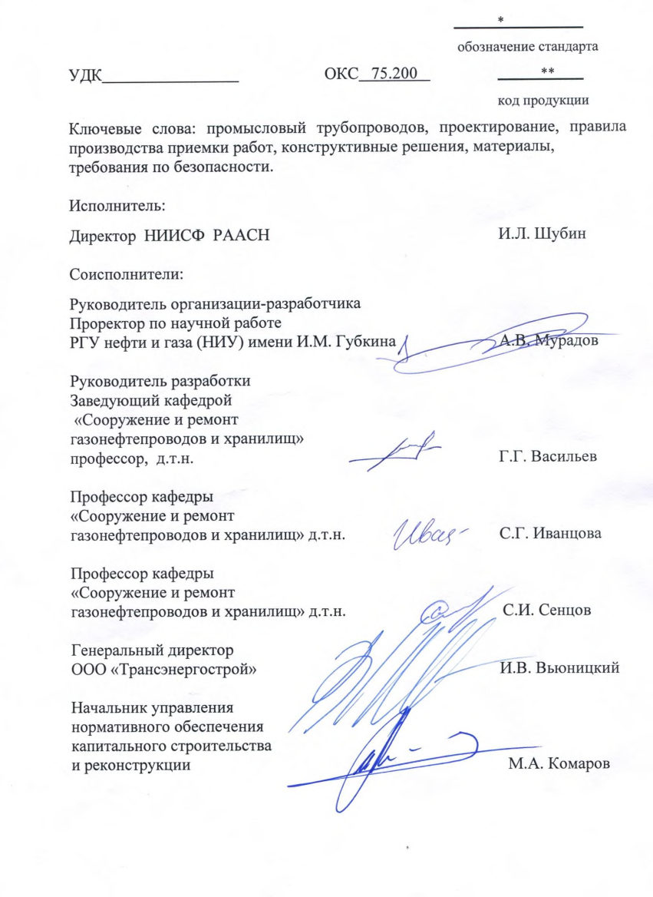
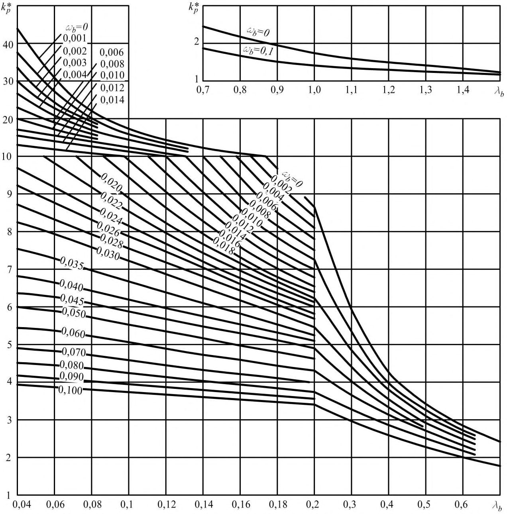
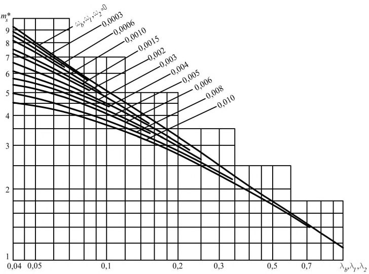

СП 284.1325800.2016 «Трубопроводы промысловые для нефти и газа. Правила проектир»
О документе: разработчики, утверждение, регистрация, ключевые слова
СВОД ПРАВИЛ
СП 284.1325800.2016
Издание официальное
1 ИСПОЛНИТЕЛЬ - Федеральное государственное бюджетное образовательное учреждение высшего образования «Российский государственный университет нефти и газа (научно-исследовательский университет) имени И.М. Губкина
2 ВНЕСЕН Техническим комитетом по стандартизации ТК 465 «Строительство»
3 ПОДГОТОВЛЕН К УТВЕРЖДЕНИЮ Департаментом градостроительной деятельности и архитектуры Министерства строительства и жилищно-коммунального хозяйства Российской Федерации (Минстрой России)
4 УТВЕРЖДЕН приказом Министерства строительства и жилищно-коммунального хозяйства Российской Федерации (Минстрой России) от 16 декабря 2016 г. № 978/пр и введен в действие с 17 июня 2017 г.
5 ЗАРЕГИСТРИРОВАН Федеральным агентством по техническому регулированию и метрологии (Росстандарт)
6 ВВЕДЕН ВПЕРВЫЕ
В случае пересмотра (замены) или отмены настоящего свода правил соответствующее уведомление будет опубликовано в установленном порядке. Соответствующая информация, уведомление и тексты размещаются также в информационной системе общего пользования - на официальном сайте разработчика (Минстрой России) в сети Интернет
© Минстрой России, 2016
Настоящий нормативный документ не может быть полностью или частично воспроизведен, тиражирован и распространен в качестве официального издания на территории Российской Федерации без разрешения Минстроя России
СП 284.1325800.2016
Дата введения - 2017-06-17
Введение
Настоящий свод правил разработан в соответствии с федеральными законами от 29 декабря 2004 г. № 190-ФЗ «Градостроительный кодекс Российской Федерации», от 30 декабря 2009 г. № 384-ФЗ «Технический регламент о безопасности зданий и сооружений».
Настоящий свод правил разработан РГУ нефти и газа (НИУ) имени И.М. Губкина (д-р техн. наук Г.Г. Васильев , д-р техн. наук С.Г. Иванцова , д-р техн. наук С.И. Сенцов ) и ООО «Трансэнергострой» (канд. хим. наук И.В. Вьюницкий , М.А. Комаров , С.А. Артемьева , А.В. Фомин ) .
ТРУБОПРОВОДЫ ПРОМЫСЛОВЫЕ ДЛЯ НЕФТИ И ГАЗА Правила проектирования и производства работ
| [1] | Федеральный закон от 29 декабря 2004 г. №190-ФЗ Градостроительный кодекс Российской Федерации |
|---|---|
| [2] | Федеральный закон от 30 декабря 2009 г. № 384-ФЗ «Технический регламент о безопасности зданий и сооружений» |
| [3] | Правила устройства электроустановок (ПУЭ) |
| [4] | СН 452-73 «Нормы отвода земель для магистральных трубопроводов» |
| [5] | Правила охраны магистральных трубопроводов, утверждены постановлением Госгортехнадзора Российской Федерации от 22 апреля 1992 г.№9 |
| [6] | ВНТП 3-85 Нормы технологического проектирования объектов сбора, транспорта, подготовки нефти, газа и воды нефтяных месторождений |
| [7] | Федеральный закон от 4 декабря 2006 г. № 200-ФЗ «Лесной кодекс Российской Федерации» |
| [8] | ПБ 03-372-00 Правила аттестации и основные требования к лабораториям неразрушающего контроля |
| [9] | ПБ 03-498-02 Единые правила безопасности при разработке месторождений полезных ископаемых открытым способом |
| [10] | ВСН 014-89 Строительство магистральных и промысловых трубопроводов. Охрана окружающей среды |
| [11] | Правила плавания по внутренним водным путям Российской Федерации, утверждены Приказом Минтранса Российской Федерации от 14 октября 2002 г. №129 |

1Область применения
Настоящий свод правил устанавливает минимальные необходимые требования к промысловым стальным трубопроводам и распространяется на проектирование, производство и приемку строительно-монтажных работ при сооружении, реконструкции и капитальном ремонте промысловых стальных трубопроводов (далее - трубопроводы) номинальным диаметром до 1400 мм включительно с избыточным давлением среды не выше 32,0 МПа нефтяных, газовых, газоконденсатных месторождений.
Настоящий свод правил распространяется на промысловые трубопроводы:
- для газовых и газоконденсатных месторождений - газопроводышлейфы до входного крана на площадке промысла или сборного пункта (до зданий переключающей арматуры, полимерно-панельных анкерующих устройств или установок подготовки шлама);
- газосборных коллекторов от обвязки газовых скважин, газопроводы неочищенного газа, трубопроводы стабильного и нестабильного газового конденсата, независимо от их протяженности;
\_\_\_\_\_\_\_\_\_\_\_\_\_\_\_\_\_\_\_\_\_\_\_\_\_\_\_\_\_\_\_\_\_\_\_\_\_\_\_\_\_\_\_\_\_\_\_\_\_\_\_\_\_\_\_\_\_\_\_\_\_\_\_\_\_\_
- трубопроводов для подачи очищенного газа и ингибитора в скважины и на другие объекты обустройства месторождений;
- трубопроводов сточных вод давлением более 10 МПа для подачи их в скважины для закачки в поглощающие пласты;
- метанолопроводов;
- ингибиторопроводов;
- нефтяных и газонефтяных месторождений -выкидные трубопроводы от нефтяных скважин, за исключением участков, расположенных на кустовых площадках скважин (на кустах скважин), для транспортирования продуктов скважин до замерных установок;
- нефтегазосборных трубопроводов (нефтегазопроводы) для транспортирования продукции нефтяных скважин от замерных установок до пунктов первой ступени сепарации нефти;
- газопроводов для транспортирования нефтяного газа от установок сепарации нефти до установок комплексной подготовки газа, установок предварительной подготовки или до потребителей;
- нефтепроводов для транспортирования газонасыщенной или разгазированной обводненной или безводной нефти от пункта сбора нефти и дожимной насосной станции до центрального пункта сбора;
- газопроводов для транспортирования газа к эксплуатационным скважинам при газлифтном способе добычи;
- газопроводов для подачи газа в продуктивные пласты с целью увеличения нефтеотдачи;
- трубопроводов систем заводнения нефтяных пластов и систем захоронения пластовых и сточных вод в глубокие поглощающие горизонты;
- нефтепроводов для транспортирования товарной нефти от центрального пункта сбора до сооружения магистрального транспорта;
- газопроводов для транспортирования газа от центрального пункта сбора до сооружения магистрального транспорта газа;
СП 284.1325800.2016
- ингибиторопроводов для подачи ингибиторов к скважинам или другим объектам обустройства нефтяных месторождений;
- газопроводов подземных хранилищ газа - трубопроводы между площадками отдельных объектов подземных хранилищ газа.
Трубопроводы, транспортирующие нефть с газом в растворенном состоянии при абсолютном давлении упругости паров при 20 °С выше 0,2 МПа и свободном состоянии, относятся к нефтегазопроводам, а транспортирующие разгазированную нефть - к нефтепроводам.
Настоящий свод правил не распространяется:
- на трубопроводы из полимерных, композитных материалов и чугуна; трубопроводы для магистрального транспортирования товарного продукта;
- трубопроводы для транспортирования продукции с высоким содержанием сероводорода (парциальное давление выше 1,0 МПа);
- трубопроводы для транспортирования продуктов температурой выше 100 °С;
- водоводы поддержания пластового давления для транспортирования пресной, пластовой и подтоварной воды на кустовую насосную станцию;
- технологические внутриплощадочные трубопроводы (трубопроводы, расположенные на площадках скважин и кустов скважин, установок предварительной подготовки газа, установок комплексной подготовки газа, дожимных компрессорных станций, дожимных насосных станций, головных компрессорных станций, головных насосных станций, головных сооружений, газоизмерительных станций, пунктов сбора, газоперерабатывающих заводов, станций подземного хранения газа и других промысловых объектов).
2Нормативные ссылки
В настоящем своде правил использованы нормативные ссылки на следующие документы:
ГОСТ 9.304-87 Единая система защиты от коррозии и старения. Покрытия газотермические. Общие требования и методы контроля
ГОСТ 9.315-91 Единая система защиты от коррозии и старения. Покрытия алюминиевые горячие. Общие требования и методы контроля
ГОСТ 9.602-2005 Единая система защиты от коррозии и старения. Сооружения подземные. Общие требования к защите от коррозии
ГОСТ 12.1.004-91 Система стандартов безопасности труда. Пожарная безопасность. Общие требования
ГОСТ 12.3.009-76 Система стандартов безопасности труда. Работы погрузочно-разгрузочные. Общие требования безопасности
ГОСТ 1412-85 Чугун с пластинчатым графитом для отливок. Марки
ГОСТ 6996-66 (ИСО 4136-89, ИСО 5173-81, ИСО 5177-81) Сварные соединения. Методы определения механических свойств
ГОСТ 7512-82 Контроль неразрушающий. Соединения сварные. Радиографический метод
ГОСТ 9238-2013 Габариты железнодорожного подвижного состава и приближения строений
ГОСТ 15140-78 Материалы лакокрасочные. Методы определения адгезии
ГОСТ 15150-69 Машины, приборы и другие технические изделия. Исполнения для различных климатических районов. Категории, условия эксплуатации, хранения и транспортирования в части воздействия климатических факторов внешней среды
ГОСТ 25225-82 Контроль неразрушающий. Швы сварных соединений трубопроводов. Магнитографический метод
ГОСТ 26775-97 Габариты подмостовые судоходных пролетов мостов на внутренних водных путях. Нормы и технические требования
ГОСТ 27751-2014 Надежность строительных конструкций и оснований. Основные положения
ГОСТ 28302-89 Покрытия газотермические защитные из цинка и алюминия металлических конструкций. Общие требования к типовому технологическому процессу
ГОСТ 30732-2006 Трубы и фасонные изделия стальные с тепловой изоляцией из пенополиуретана с защитной оболочкой. Технические условия
ГОСТ 31443-2012 Трубы стальные для промысловых трубопроводов. Технические условия
ГОСТ 31448-2012 Трубы стальные с защитными наружными покрытиями для магистральных газонефтепроводов. Технические условия
ГОСТ EN 826-2011 Изделия теплоизоляционные, применяемые в строительстве. Методы определения характеристик сжатия
ГОСТ Р 51164-98 Трубопроводы стальные магистральные. Общие требования к защите от коррозии
ГОСТ Р 55724-2013 Контроль неразрушающий. Соединения сварные. Методы ультразвуковые
СП 14.13330.2014 «СНиП II-7-81* Строительство в сейсмических районах» (с изменением № 1)
СП 18.13330.2011 «СНиП II-89-80* Генеральные планы промышленных предприятий» (с изменением № 1)
СП 20.13330.2011 «СНиП 2.01.07-85* Нагрузки и воздействия»
СП 22.13330.2011 «СНиП 2.02.01-83* Основания зданий и сооружений»
СП 25.13330.2012 «СНиП 2.02.04-88 Основания и фундаменты на вечномерзлых грунтах» (с изменением № 1)
СП 28.13330.2012 «СНиП 2.03.11-85 Защита строительных конструкций от коррозии» (с изменениями № 1, № 2)
СП 31.13330.2012 «СНиП 2.04.02-84* Водоснабжение. Наружные сети и сооружения» (с изменениями № 1, № 2)
СП 32.13330.2012 «СНиП 2.04.03-85 Канализация. Наружные сети и сооружения» (с изменением № 1)
СП 36.13330.2012 «СНиП 2.05.06-85* Магистральные трубопроводы» (с изменением № 1)
СП 45.13330.2012 «СНиП 3.02.01-87 Земляные сооружения, основания и фундаменты»
СП 47.13330.2012 «СНиП 11-02-96 Инженерные изыскания для строительства. Основные положения»
СП 61.13330.2012 «СНиП 41-03-2003 Тепловая изоляция оборудования и трубопроводов» (с изменением № 1)
СП 86.13330.2014 «СНиП III-42-80* Магистральные трубопроводы» (с изменением № 1)
СП 121.13330.2012 «СНиП 32-03-96 Аэродромы»
СП 131.13330.2012 «СНиП 23-01-99* Строительная климатология» (с изменением № 2)
СП 245.1325800.2015 Защита от коррозии линейных объектов и сооружений в нефтегазовом комплексе. Правила производства и приемки работ
Примечание - При пользовании настоящим сводом правил целесообразно проверить действие ссылочных документов в информационной системе общего пользования - на официальном сайте федерального органа исполнительной власти в сфере стандартизации в сети Интернет или по ежегодному информационному указателю «Национальные стандарты», который опубликован по состоянию на 1 января текущего года, и по выпускам ежемесячного информационного указателя «Национальные стандарты» за текущий год. Если заменен ссылочный документ, на который дана недатированная ссылка, то рекомендуется использовать действующую версию этого документа с учетом всех внесенных в данную версию изменений. Если заменен ссылочный документ, на который дана датированная ссылка, то рекомендуется использовать версию этого документа с указанным выше годом утверждения (принятия). Если после утверждения настоящего свода правил в ссылочный документ, на который дана датированная ссылка, внесено изменение, затрагивающее положение на которое дана ссылка, то это положение рекомендуется применять без учета данного изменения. Если ссылочный документ отменен без замены, то положение, в котором дана ссылка на него, рекомендуется применять в части, не затрагивающей эту ссылку. Сведения о действии сводов правил целесообразно проверить в Федеральном информационном фонде стандартов.
3Термины и определения
В настоящем своде правил применены термины в соответствии с требованиями [1], а также следующие термины с соответствующими определениями:
- 3.1анодное заземление
- Устройство, обеспечивающее стекание защитного тока катодной защиты в землю и состоящее из одного или нескольких анодных заземлителей.
- 3.2балластировка трубопровода
- Установка на трубопроводе устройств, обеспечивающих его проектное положение на обводненных участках трассы.
- 3.3заглубление трубопровода
- Расстояние от верха трубы до поверхности земли; при наличии балласта - расстояние от поверхности земли до верха балластирующей конструкции.
- 3.4защитное покрытие
- Материал и (или) конструкция, изолирующая наружную или внутреннюю поверхность трубопровода от внешней или внутренней среды.
- 3.5защитный потенциал
- Катодный потенциал, обеспечивающий требуемое торможение коррозионного процесса.
- 3.6защитный футляр
- Постоянное заглубленное сооружение, предназначенное для защиты трубопроводов от неблагоприятных нагрузок и воздействий при пересечении естественных и искусственных преград.
- 3.7изолирующее соединение
- Вставка между двумя участками трубопровода, нарушающая его электрическую непрерывность.
- 3.8испытание на прочность
- Испытание трубопроводов (труб, арматуры, соединительных деталей, узлов и оборудования) внутренним давлением, превышающим рабочее давление, устанавливаемое проектной документацией, для подтверждения возможности эксплуатации объекта при допустимом превышении от рабочего давления.
- 3.9категория трубопровода (участка)
- Показатель, требующий для рассматриваемого трубопровода (участка) выполнения определенных условий по прочности, объему неразрушающего контроля и значению испытательного давления.
- 3.10катодная защита
- Торможение скорости коррозионного процесса посредством сдвига потенциала оголенных участков трубопровода в сторону более отрицательных значений, чем потенциал свободной коррозии этих участков.
- 3.11катодная станция
- Комплекс электротехнического оборудования, предназначенный для создания постоянного электрического тока между анодным заземлителем и подземным сооружением (трубопровод, резервуар и др.) при катодной защите его от коррозии.
- 3.12компенсатор
- Конструктивное решение, предназначенное для восприятия перемещений трубопровода от температурных деформаций.
- 3.13нормативная нагрузка
- Воздействие на трубопровод, регламентируемое соответствующими нормативными документами или проектом.
- 3.14охранная зона трубопровода
- Территория или акватория с особыми условиями использования, установленная вдоль трубопровода для обеспечения его безопасности.
- 3.15подводный переход трубопровода
- Участок трубопровода, прокладываемый под руслом реки, канала, озера и т.д.
- 3.16полоса отвода
- Полоса на трассе трубопровода, отведенная для производства строительно-монтажных и транспортных работ на период строительства.
- 3.17промысловый трубопровод
- Трубопровод с устройствами на нем для транспортирования газообразных и жидких продуктов под действием напора (разности давлений) от скважин до места выхода с промысла подготовленной к дальнему транспортированию товарной продукции.
- 3.18протектор
- Автономное средство электрохимической защиты гальванический элемент (электрод), собственный электрохимический потенциал которого более отрицателен, чем у трубной стали.
- 3.19соединительные детали
- Элементы трубопровода, предназначенные для изменения направления его оси, ответвления от него, изменения его диаметра.
- 3.20технологический задел
- Линейное опережение (в единицах длины) предыдущей технологической операции, необходимое для выполнения последующей технологической операции.
- 3.21технологический разрыв
- Участок между несоединенными частями одного трубопровода (плети не соединены между собой), обеспечивающий продольную и поперечную податливость прилегающих концов плетей при монтаже и укладке в проектное положение.
- 3.22упругий изгиб трубопровода
- Изменение направления оси трубопровода (в вертикальной или горизонтальной плоскости) без применения отводов.
4Сокращения
В настоящем своде правил применены следующие сокращения:
АГРС автоматизированная ГРС;
АУЗК - автоматический ультразвуковой контроль;
ВМГ - вечномерзлые грунты;
ГВВ горизонт высоких вод;
ГПЗ газоперерабатывающий завод;
ГРС газораспределительная станция;
ГС - головные сооружения;
ДКС - дожимная компрессорная станция;
ДНС - дожимная насосная станция;
КИП - контрольно-измерительный пункт;
КС - компрессорная станция;
ЛЭП - линия электропередачи;
НПС - нефтеперерабатывающая станция;
ПОС - проект организации строительства;
ППР - проект производства работ;
ПХГ - подземное хранилище газа;
СВД - сварка вращающейся дугой;
СДТ - соединительные детали трубопроводов;
СКЗ - станция катодной защиты;
СОП стандартные образцы предприятия;
ТУ технические условия;
УКПГ - установка комплексной подготовки газа;
УППГ - установка предварительной подготовки газа;
ЦПС - центральный пункт сбора;
ЭХЗ - электрохимическая защита от коррозии.
5Общие положения
I - при рабочем давлении свыше 20 до 32 МПа включительно;
II - при рабочем давлении свыше 10 до 20 МПа включительно;
III - при рабочем давлении свыше 2,5 до 10 МПа включительно;
IV - при рабочем давлении до 2,5 МПа включительно.
I - трубопроводы номинальным диаметром 600 мм и более;
II - трубопроводы номинальным диаметром менее 600 до 300 мм включительно;
III - трубопроводы номинальным диаметром менее 300 мм.
СП 284.1325800.2016 увеличения степени заводской готовности строительных конструкций и применения конструкций в блочно-комплектном исполнении.
Гидравлический расчет промысловых трубопроводов с внутренним покрытием должен учитывать:
- наличие внутреннего покрытия, влияющего на абсолютное значение эквивалентной шероховатости;
- наличие втулок внутренней защиты сварных швов соединений труб, перекрывающих часть проходного сечения трубопровода.
6Обеспечение необходимого уровня надежности и безопасности
Категории трубопроводов и их участков должны приниматься по таблицам 1 и 2.
Таблица 1 Категории трубопроводов в зависимости от их назначения
| Назначение трубопроводов | Категория трубопроводов |
|---|---|
| 1 Метанолопроводы и трубопроводы, транспортирующие вредные среды, трубопроводы, транспортирующие среды с парциальным давлением сероводорода более 300 Па . Трубопроводы нестабильного конденсата I и II классов, ингибиторопроводы, газопроводы - шлейфы I и II классов, газовые и межпромысловые коллекторы, газопроводы I класса, нефтегазопроводы I класса с газовым фактором 300 м³ /т и более, трубопроводы систем заводнения, транспортирующие пластовые и сточные воды давлением 10 МПа и более, трубопроводы систем | II |
| увеличения нефтеотдачи пластов давлением 10 МПа и выше 2 Выкидные трубопроводы нефтяных скважин, нефтегазопроводы I класса с газовым фактором менее 300 м³ /т, II класса с газовым фактором 300 м³ /т и более, газопроводы II и III классов, трубопроводы нестабильного конденсата III класса, газопроводы - шлейфы III класса, трубопроводы систем заводнения, транспортирующих пресную воду давлением 10 МПа и более, транспортирующих пластовые и сточные воды давлением менее 10 МПа, нефтепроводы I класса. Трубопроводы нестабильного конденсата IV класса, газопроводы - шлейфы IV класса, нефтегазопроводы II класса с газовым фактором менее 300 м³ /т и III класса независимо от газового фактора, нефтепроводы II и III классов, трубопроводы систем заводнения, транспортирующие пресную воду давлением менее 10 Мпа Примечания 1 Трубопроводы, прокладываемые по территории | III |
| вечномерзлых грунтов, теряющих при оттаивании несущую относительной просадочностью более 0,1) должны приниматься не категории. | распространения способность (с ниже II |
2 Для трубопроводов, транспортирующих среды с парциальным давлением сероводорода 300 Па и менее, категория назначается так же, как для трубопроводов со средами, не содержащими сероводорода.
Таблица 2 Категории участков трубопроводов
| Категория участков | Категория участков | Категория участков | Категория участков | Категория участков | Категория участков | Категория участков | |
|---|---|---|---|---|---|---|---|
| Наименование участков трубопроводов | метанолопроводов, трубопроводов, транспортирующих вредные вещества (кроме транспортирующих вещества с содержанием H 2 S | газопроводов и трубопроводов нестабильного конденсата для транспортировки сероводородосодержащих продуктов | газопроводов и трубопроводов нестабильного конденсата для транспорта бессернистых продуктов | газопроводов и трубопроводов нестабильного конденсата для транспорта бессернистых продуктов | выкидных трубопроводов нефтяных скважин, нефтегазопроводов, конденсатопроводов стабильного конденсата для транспорта как бессернистых, так и сероводородсодержащих продуктов | выкидных трубопроводов нефтяных скважин, нефтегазопроводов, конденсатопроводов стабильного конденсата для транспорта как бессернистых, так и сероводородсодержащих продуктов | трубопроводов систем заводнения при Р п > 10 Мпа |
| при категории трубопровода | при категории трубопровода | при категории трубопровода | при категории трубопровода | при категории трубопровода | при категории трубопровода | при категории трубопровода | |
| II | II | II | III | II | III | III | |
| Переходы через водные преграды | |||||||
| Судоходные и несудоходные шириной зеркала воды в межень 25 м и более в русловой части и прибрежные участки длиной не менее 25 м каждый (от среднемеженного | I | I | - | II | I | II | II |
| Несудоходные шириной зеркала воды в межень до 25 м в русловой части, оросительные и деривационные каналы | I | - | - | II | - | II | - |
| Горные потоки (реки) при подземной прокладке и поймы рек по горизонту высоких вод 10 %обеспеченности | - | - | - | II | - | II | - |
| Участки протяженностью 1000 м от границ горизонта высоких вод 10 %обеспеченности | - | - | - | - | - | II | - |
| Переходы через болота | - | - | |||||
| Тип II | - | - | - | II | - | II | - |
| Тип III | I | - | - | II | - | II | II |
| Железные дороги колеи 1524 мм общей сети (на перегонах), включая участки по обе стороны дороги длиной | I | I | I | I | I | I | I |
| 65 м каждый от осей крайних путей, но не менее 50 м от подошвы насыпи земляного полотна дороги и автомобильные дороги общего пользования 1-а, 1- 6, II, III категорий, включая участки длиной не менее 25 м каждый по обе стороны дороги от подошвы насыпи или | |||||||
| бровки выемки земляного полотна дороги Железные дороги промышленных предприятий колеи 1524 мм (внешние, внутренние железнодорожные пути), включая участки по обе стороны дороги длиной 50 мкаждый | - | - | - | II | - | - | - |
Продолжение таблицы 2
| Категория участков | Категория участков | Категория участков | Категория участков | Категория участков | Категория участков | Категория участков | |
|---|---|---|---|---|---|---|---|
| Наименование участков трубопроводов | метанолопроводов, трубопроводов, транспортирующих вредные вещества (кроме транспортирующих вещества с содержанием H S | газопроводов и трубопроводов нестабильного конденсата для транспортировки сероводородосодержащих продуктов | газопроводов и трубопроводов нестабильного конденсата для транспорта бессернистых продуктов | газопроводов и трубопроводов нестабильного конденсата для транспорта бессернистых продуктов | выкидных трубопроводов нефтяных скважин, нефтегазопроводов, конденсатопроводов стабильного конденсата для транспорта как бессернистых, так и сероводородсодержащих продуктов | выкидных трубопроводов нефтяных скважин, нефтегазопроводов, конденсатопроводов стабильного конденсата для транспорта как бессернистых, так и сероводородсодержащих продуктов | трубопроводов систем заводнения при Р п > 10 Мпа |
| при категории трубопровода | при категории трубопровода | при категории трубопровода | при категории трубопровода | при категории трубопровода | при категории трубопровода | при категории трубопровода | |
| II | II | II | III | II | III | III | |
| дороги I-л, II-л, III-л, IV-л категорий, внутрихозяйственные автомобильные дороги I-c категории, включая участки по обе стороны дороги длиной 25 мкаждый от подошвы насыпи или бровки выемки земляного полотна дороги Трубопроводы, прокладываемые в слабо связанных | - | - | - | II | - | - | - |
| КС, ДКС, ГС, ПХГ Трубопроводы, прокладываемые по поливным и орошаемым землям хлопковых и рисовых плантаций | I | - | - | II | - | II | - |
| Переходы через селевые потоки, конусы выносов и солончаковые грунты и нефтепроводы, нефтегазопроводы, конденсатопроводы, выкидные трубопроводы нефтяных | - | - | - | - | - | II | - |
| скважин, прокладываемые параллельно рекам с зеркалом воды в межень 25 м и более, каналам, озерам и другим водоемам рыбохозяйственного значения, а также выше населенных пунктов и промышленных предприятий на расстояние от них до: 300 м - при номинальном диаметре труб 700 мм и менее 500 м - при номинальном диаметре труб до 1000 мм включительно; 1000 м - при номинальном диаметре труб более 1000 мм Узлы запуска и приема очистных устройств, а также | - | - | - | II | - | II | - |
Окончание таблицы 2
| Категория участков | Категория участков | Категория участков | Категория участков | Категория участков | Категория участков | Категория участков | |
|---|---|---|---|---|---|---|---|
| Наименование участков трубопроводов | метанолопроводов, трубопроводов, транспортирующих вредные вещества (кроме транспортирующих вещества с содержанием H 2 S | газопроводов и трубопроводов нестабильного конденсата для транспортировки сероводородосодержащих продуктов | газопроводов и трубопроводов нестабильного конденсата для транспорта бессернистых продуктов | газопроводов и трубопроводов нестабильного конденсата для транспорта бессернистых продуктов | выкидных трубопроводов нефтяных скважин, нефтегазопроводов, конденсатопроводов стабильного конденсата для транспорта как бессернистых, так и сероводородсодержащих продуктов | выкидных трубопроводов нефтяных скважин, нефтегазопроводов, конденсатопроводов стабильного конденсата для транспорта как бессернистых, так и сероводородсодержащих продуктов | трубопроводов систем заводнения при Р п > 10 Мпа |
| при категории трубопровода | при категории трубопровода | при категории трубопровода | при категории трубопровода | при категории трубопровода | при категории трубопровода | при категории трубопровода | |
| II | II | II | III | II | III | III | |
| арматуры | |||||||
| Пересечения с подземными коммуникациями (канализационными коллекторами, нефтепроводами, нефтегазопроводами, конденсатопроводами, газопроводами, силовыми кабелями и кабелями связи, подземными, наземными и надземными оросительными системами и т.п.) в пределах 20 мпо обе стороны пересекаемой коммуникации | - | - | - | II | - | II | II |
| Пересечения с воздушными линиями электропередачи | в соответствии с требованиями [3] | в соответствии с требованиями [3] | в соответствии с требованиями [3] | в соответствии с требованиями [3] | в соответствии с требованиями [3] | в соответствии с требованиями [3] | в соответствии с требованиями [3] |
| Трубопроводы ввода - вывода, транзитные трубопроводы | I | I | I | I | - | - | - |
| Трубопроводы обвязки куста скважин | I | I | I | I | - | - | - |
| Примечания 1 Действующие трубопроводы, находящиеся в удовлетворительном техническом состоянии (по заключению представителей заказчика строящегося трубопровода, эксплуатирующей организации и соответствующего органа государственного надзора), при пересечении их проектируемыми трубопроводами, линиями электропередачи, а также подземными коммуникациями, указанными в позиции 8, не подлежат замене трубопроводами более высокой категории. | Примечания 1 Действующие трубопроводы, находящиеся в удовлетворительном техническом состоянии (по заключению представителей заказчика строящегося трубопровода, эксплуатирующей организации и соответствующего органа государственного надзора), при пересечении их проектируемыми трубопроводами, линиями электропередачи, а также подземными коммуникациями, указанными в позиции 8, не подлежат замене трубопроводами более высокой категории. | Примечания 1 Действующие трубопроводы, находящиеся в удовлетворительном техническом состоянии (по заключению представителей заказчика строящегося трубопровода, эксплуатирующей организации и соответствующего органа государственного надзора), при пересечении их проектируемыми трубопроводами, линиями электропередачи, а также подземными коммуникациями, указанными в позиции 8, не подлежат замене трубопроводами более высокой категории. | Примечания 1 Действующие трубопроводы, находящиеся в удовлетворительном техническом состоянии (по заключению представителей заказчика строящегося трубопровода, эксплуатирующей организации и соответствующего органа государственного надзора), при пересечении их проектируемыми трубопроводами, линиями электропередачи, а также подземными коммуникациями, указанными в позиции 8, не подлежат замене трубопроводами более высокой категории. | Примечания 1 Действующие трубопроводы, находящиеся в удовлетворительном техническом состоянии (по заключению представителей заказчика строящегося трубопровода, эксплуатирующей организации и соответствующего органа государственного надзора), при пересечении их проектируемыми трубопроводами, линиями электропередачи, а также подземными коммуникациями, указанными в позиции 8, не подлежат замене трубопроводами более высокой категории. | Примечания 1 Действующие трубопроводы, находящиеся в удовлетворительном техническом состоянии (по заключению представителей заказчика строящегося трубопровода, эксплуатирующей организации и соответствующего органа государственного надзора), при пересечении их проектируемыми трубопроводами, линиями электропередачи, а также подземными коммуникациями, указанными в позиции 8, не подлежат замене трубопроводами более высокой категории. | Примечания 1 Действующие трубопроводы, находящиеся в удовлетворительном техническом состоянии (по заключению представителей заказчика строящегося трубопровода, эксплуатирующей организации и соответствующего органа государственного надзора), при пересечении их проектируемыми трубопроводами, линиями электропередачи, а также подземными коммуникациями, указанными в позиции 8, не подлежат замене трубопроводами более высокой категории. | Примечания 1 Действующие трубопроводы, находящиеся в удовлетворительном техническом состоянии (по заключению представителей заказчика строящегося трубопровода, эксплуатирующей организации и соответствующего органа государственного надзора), при пересечении их проектируемыми трубопроводами, линиями электропередачи, а также подземными коммуникациями, указанными в позиции 8, не подлежат замене трубопроводами более высокой категории. |
Таблица 3
| Номинальный диаметр трубопровода, | Значение коэффициента надежности по назначению трубопровода при давлении, МПа | Значение коэффициента надежности по назначению трубопровода при давлении, МПа | Значение коэффициента надежности по назначению трубопровода при давлении, МПа | Значение коэффициента надежности по назначению трубопровода при давлении, МПа | Значение коэффициента надежности по назначению трубопровода при давлении, МПа |
|---|---|---|---|---|---|
| мм | <7,5 n P | 7,5< 10 n P | 10< 15 n P | 15< 20 n P | 20< 32 n P |
| 300 и менее 400-500 600-700 800-1000 1200 | 1,00 | 1,00 | 1,00 | 1,00 | 1,05 |
| 1,00 | 1,00 | 1,00 | 1,05 | 1,10 | |
| 1,00 | 1,00 | 1,05 | 1,10 | 1,15 | |
| 1,00 | 1,05 | 1,10 | 1,15 | - | |
| 1,05 | 1,10 | 1,15 | - | - | |
| 1400 | 1,10* | 1,15* | - | - | - |
| * Только для газопроводов. | * Только для газопроводов. | * Только для газопроводов. | * Только для газопроводов. | * Только для газопроводов. | * Только для газопроводов. |
Таблица 4
| Категория трубопровода и его участка | Значение коэффициента условий работы трубопровода c |
|---|---|
| I II III | 0,6 0,75 0,90 |
Таблица 5
| Характеристика труб | Значение коэффициента надежности по материалу m |
|---|---|
| 1 Сварные, изготовленные из низколегированных сталей двухсторонней электродуговой сваркой под флюсом по сплошному технологическому шву и прошедшие 100% - ный контроль на сплошность основного металла и сварных соединений неразрушающими методами; сварные, изготовленные из спокойных сталей с содержанием в химсоставе углерода не более 0,10% и серы не болеe 0,006% сваркой токами высокой частоты с автоматическим контролем параметров нагрева и сварки кромок, термической обработкой сварного соединения, основной металл и сварные соединения которых прошли 100% - ный контроль неразрушающими метода - | 1,34 |
Окончание таблицы 5
| Характеристика труб | Значение коэффициента надежности по материалу m |
|---|---|
| ми; бесшовные, изготовленные из катаной или кованой заготовки, прошедшие 100% - ный контроль на сплошность металла неразрушающими методами 2 Сварные, изготовленные из низколегированной стали двухсторонней электродуговой сваркой под флюсом по сплошному технологическому шву и прошедшие 100% - ный контроль сварных соединений неразрушающими методами; сварные, изготовленные из спокойных сталей с содержанием углерода не более 0,10% и серы не более 0,010% электроконтактной сваркой токами высокой частоты с автоматическим контролем параметров нагрева и сварки кромок, сварные соединения которых термически обработаны и прошли 100%- ный контроль неразрушающими методами; бесшовные, изготовленные из непрерывно - литой заготовки, прошедшие 100% - ный контроль металла неразрушающими | 1,40 |
| 3 Сварные, изготовленные из низколегированной или углеродистой стали двухсторонней электродуговой сваркой и прошедшие 100% - ный контроль сварных соединений неразрушающими методами; сварные, изготовленные из спокойных и полуспокойных сталей электроконтактной сваркой токами высокой частоты, сварные соединения которых термически обработаны и прошли 100% - ный контроль неразрушающими методами; | 1,47 |
| бесшовные, изготовленные из слитка и прошедшие 100% - ный контроль металла неразрушающими методами 4 Сварные, изготовленные из спокойных и полуспокойных сталей двухсторонней электродуговой сваркой и прошедшие контроль сварных соединений неразрушающими методами; сварные, изготовленные из спокойных и полуспокойных сталей электроконтактной сваркой, сварные соединения которых термообработаны; бесшовные, прошедшие выборочный контроль металла | 1,55 |
Примечания
1 Минусовой допуск по толщине стенки для всех труб по пункту 1 и сварных труб по пункту 2 не должен превышать 5% номинальной толщины стенки.
2 Допускается применять коэффициенты 1,34 вместо 1,40; 1,40 вместо 1,47 и 1,47 вместо 1,55 для труб, изготовленных двухсторонней электродуговой или высокочастотной сваркой, до 12 мм при применении специальных технологий производства, позволяющих получить качество труб, соответствующее указанному значению коэффициента . m
Таблица 6
| Нагрузка | и воздействие | Способ прокладки трубопроводов | Способ прокладки трубопроводов | Значение коэф - фициента надежности по нагрузке |
|---|---|---|---|---|
| вид | характеристика | под - земный | надземный | f |
| Постоянные | Собственный вес трубопровода, арматуры и обустройств | + | + | 1,1 (0,95) |
| Постоянные | Вес изоляции | + | + | 1,2 |
| Постоянные | Вес давления грунта (засыпки, насыпи) Предварительное напряжение | + | - | 1,2 (0,8) |
| трубопровода (упругий изгиб по заданному профилю, предварительная растяжка компенсаторов и др.) и гидростатическое давление воды | + | + | 1,0 | |
| Временные длительные | Внутреннее давление транспортируемой среды: | + | + | 1,1 |
| Временные длительные | газообразной жидкой | + | + | 1,15 |
| Временные длительные | Вес транспортируемой среды: газообразной | + | + | 1,1 (1,0) |
| Временные длительные | жидкой | + | + | 1,0 (0,95) |
| Временные длительные | Температурный перепад металла стенок трубопровода | + | + | 1,1 |
| Временные длительные | Неравномерные деформации грунта, не сопровождающиеся изменением его структуры (осадки, пучения и др.) | + | + | l,5 |
| Кратковре - менные | Снеговая | - | + | 1,4 |
| Кратковре - менные | Гололедная | - | + | 1,3 |
| Кратковре - менные | Ветровая | - | + | 1,2 |
| Транспортирование отдельных секций, сооружение трубопроводов, испытание и пропуск очистных устройств | + | + | 1,0 | |
| Особые | Сейсмические воздействия | + | + | 1,0 |
| Особые | Нарушения технологического процесса, временные неисправности или поломки оборудования Неравномерные деформации грунта, сопровождающиеся изменением его структуры (селевые потоки и оползни; деформации земной поверхности в районах горных выработок и карстовых районах; деформации просадочных грунтов при | + | + | 1,0 |
Окончание таблицы 6
СП 284.1325800.2016
| Нагрузка и воздействие | Нагрузка и воздействие | Способ прокладки трубопроводов | Способ прокладки трубопроводов | Значение коэф - фициента надежности по нагрузке, |
|---|---|---|---|---|
| вид | характеристика | под - земный | надземный | f |
| оттаивании и др.) | + | + | 1,0 |
Обозначения: «+» -нагрузки и воздействия следует учитывать, «-» не следует учитывать.
Примечания
1 Значения коэффициентов надежности по нагрузке, указанные в скобках, должны приниматься в случаях, когда уменьшение нагрузки ухудшает условия работы трубопровода.
2 Когда по условиям испытания или эксплуатации в трубопроводах, транспортирующих газообразные среды, возможно полное или частичное заполнение их внутренней полости водой или конденсатом, а в трубопроводах, транспортирующих жидкие среды -попадание воздуха или опорожнение их, необходимо учитывать изменение нагрузки от веса среды.
При размещении трубопроводов нефти, нефтепродуктов и сжиженных газов на отметках земли выше зданий и сооружений при прохождении их вблизи этих объектов к значениям минимальных расстояний , приведенным в таблице 7 , исходя из местных условий и норм технологического проектирования , должны быть предусмотрены дополнительные проектные решения по обеспечению безопасности объектов, в том числе за счет: увеличения значений минимальных расстояний, установки дополнительных запорных устройств с дистанционным управлением, отключающим их в случае утечек продукта, заключения трубопровода в защитный футляр и пр.
Таблица 7
| Минимальное расстояние, м, для | Минимальное расстояние, м, для | Минимальное расстояние, м, для | Минимальное расстояние, м, для | Минимальное расстояние, м, для | Минимальное расстояние, м, для | Минимальное расстояние, м, для | Минимальное расстояние, м, для | Минимальное расстояние, м, для | Минимальное расстояние, м, для | Минимальное расстояние, м, для | Минимальное расстояние, м, для | Минимальное расстояние, м, для | Минимальное расстояние, м, для | Минимальное расстояние, м, для | Минимальное расстояние, м, для | Минимальное расстояние, м, для | |
|---|---|---|---|---|---|---|---|---|---|---|---|---|---|---|---|---|---|
| газопроводов | газопроводов | газопроводов | газопроводов | газопроводов | газопроводов | газопроводов | газопроводов | газопроводов | газопроводов | газопроводов | газопроводов | газопроводов | газопроводов | нефте- продуктопроводов | нефте- продуктопроводов | нефте- продуктопроводов | |
| класса | класса | класса | класса | класса | класса | класса | |||||||||||
| Объект, здание и | II | II | II | III | III | III | I | II | III | ||||||||
| сооружение | IV номинальным диаметром, мм | IV номинальным диаметром, мм | IV номинальным диаметром, мм | IV номинальным диаметром, мм | IV номинальным диаметром, мм | IV номинальным диаметром, мм | IV номинальным диаметром, мм | IV номинальным диаметром, мм | IV номинальным диаметром, мм | IV номинальным диаметром, мм | IV номинальным диаметром, мм | IV номинальным диаметром, мм | IV номинальным диаметром, мм | ||||
| 300 и менее | св. 300 до 600 | св. 600 до 800 | св. 800 до 1400 | 300 и менее | св. 300 до 600 | св. 600 до 800 | св. 800 до 1400 | 300 и менее | св. 300 до 600 | св. 600 до 800 | св. 800 до 1400 | 300 и менее | св. 300 до 1400 | св. 700 до 1200 | св. 300 до 700 | 300 и менее | |
| 1 Города и другие населенные пункты, коллективные сады с садовыми домиками, дачные поселки, отдельные промышленные и сельскохозяйственные предприятия. тепличные комбинаты и птицефабрики, молокозаводы, разработки ископаемых, гаражи открытые стоянки | 200 400 | 250 600 | 300 700 | 350 800 | 150 300 | 200 400 | 250 500 | 300 600 | 100 200 | 150 250 | 200 300 | 250 400 | 75 150 | 125 200 | 150 | 100 | 75 |
| хозяйства, карьеры полезных и для автомобилей индивидуальных владельцев при количестве машин более 20; отдельно стоящие здания с массовым скоплением людей (больницы, школы, клубы, детские сады, ясли, вокзалы и т. д.); жилые здания в три этажа и более; железнодорожные станции, аэропорты и пристани, гидроэлектростанции, гидротехнические сооружения морского и речного транспорта I-IV классов, очистные |
| сооружения и насосные водопроводные станции, не относящиеся к промыслу; мосты железных дорог общей сети и автомобильных дорог I и II категорий с пролетом св. 20 м (при прокладке нефтепроводов и нефтепродуктопроводов ниже мостов по течению); склады легковоспламеняющихся жидкостей и газов с объемом хранения св. 1000 м³ , автозаправочные станции; мачты (башни) и сооружения многоканальной радиорелейной линии технологической связи трубопроводов, мачты (башни) и сооружения многоканальной радиорелейной линии связи Министерства связи РФ и других ведомств, а также | |||||||||||||||||
|---|---|---|---|---|---|---|---|---|---|---|---|---|---|---|---|---|---|
| телевизионные башни 2 Железные дороги общей сети (на перегонах) и автомобильные дороги I, II, III категорий, параллельно которым прокладывается | 100 250 | 150 300 | 200 400 | 250 500 | 75 200 | 125 250 | 150 300 | 200 400 | 75 150 | 100 200 | 125 250 | 150 300 | 75 100 | 100 150 | 50 | 40 | 30 |
Продолжение таблицы 7
| Минимальное расстояние, м, для | Минимальное расстояние, м, для | Минимальное расстояние, м, для | Минимальное расстояние, м, для | Минимальное расстояние, м, для | Минимальное расстояние, м, для | Минимальное расстояние, м, для | Минимальное расстояние, м, для | Минимальное расстояние, м, для | Минимальное расстояние, м, для | Минимальное расстояние, м, для | Минимальное расстояние, м, для | Минимальное расстояние, м, для | Минимальное расстояние, м, для | Минимальное расстояние, м, для | Минимальное расстояние, м, для | Минимальное расстояние, м, для | |
|---|---|---|---|---|---|---|---|---|---|---|---|---|---|---|---|---|---|
| газопроводов | газопроводов | газопроводов | газопроводов | газопроводов | газопроводов | газопроводов | газопроводов | газопроводов | газопроводов | газопроводов | газопроводов | газопроводов | газопроводов | нефте- продуктопроводов | нефте- продуктопроводов | нефте- продуктопроводов | |
| Объект, здание и | II | I | II | III | |||||||||||||
| сооружение | III IV номинальным диаметром, мм | III IV номинальным диаметром, мм | III IV номинальным диаметром, мм | III IV номинальным диаметром, мм | III IV номинальным диаметром, мм | III IV номинальным диаметром, мм | III IV номинальным диаметром, мм | III IV номинальным диаметром, мм | III IV номинальным диаметром, мм | III IV номинальным диаметром, мм | III IV номинальным диаметром, мм | III IV номинальным диаметром, мм | III IV номинальным диаметром, мм | III IV номинальным диаметром, мм | III IV номинальным диаметром, мм | III IV номинальным диаметром, мм | III IV номинальным диаметром, мм |
| 300 и менее | св. 300 до 600 | св. 600 до 800 | св. 800 до 1400 | 300 и менее | св. 300 до 600 | св. 600 до 800 | св. 800 до 1400 | 300 и менее | св. 300 до 600 | св. 600 до 800 | св. 800 до 1400 | 300 и менее | св. 300 до 1400 | св. 700 до 1200 | св. 300 до 700 | 300 и менее | |
| садовые домики коллективных садов, дачи, дома линейных обходчиков, животноводческие фермы, огороженные карты для организованного выпаса скота, полевые станы, кладбища | 75 150 | 125 200 | 150 300 | 200 400 | 50 100 | 75 150 | 100 200 | 150 250 | 30 50 | 50 75 | 75 100 | 100 200 | 20 50 | 50 75 | 30 | 20 | 20 |
| 3 Отдельно стоящие нежилые и подсобные строения, гаражи и открытые стоянки для автомобилей при количестве машин 20 и менее; автомобильные дороги общего пользования IV, V категорий, подъездные автомобильные дороги, а также автомобильные дороги от жилых поселков или вахтенных комплексов промысла; межплощадочные автомобильные дороги технологически не связанные с промыслом предприятий; железные дороги промышленных предприятий и |
| канализационные сооружения | 75 | 100 | |||||||||||||||
|---|---|---|---|---|---|---|---|---|---|---|---|---|---|---|---|---|---|
| 4 Территории УКПГ, УППГ, КС, ДКС, ГС, ПХГ, СП и | 100 150 | 150 200 | 200 250 | 250 300 | 75 75 | 125 125 | 150 150 | 200 200 | 75 | 100 | 125 125 | 150 150 | 75 75 | 125 125 | 50 | 30 | 30 |
| других технологических установок подготовки нефти и газа 5 Устья одной или куста бурящихся и | 50 50 | 100 100 | 100 100 | 100 100 | 50 50 | 100 100 | 100 100 | 100 100 | 30 30 | 50 50 | 50 50 | 50 50 | 15 15 | 15 15 | 50 | 30 | 30 |
| 6 Мосты железных дорог промышленных предприятий, автомобильных дорог III, IV, V, III-п и IV-п категорий с пролетом св. | 100 150 | 150 200 | 200 300 | 250 400 | 75 100 | 125 150 | 150 200 | 200 250 | 75 100 | 100 150 | 125 200 | 150 250 | 75 100 | 125 150 | 100 | 70 | 50 |
| 7 Магистральные оросительные каналы и коллекторы, реки и водоемы, водозаборные сооружения и станции оросительных систем, параллельно которым прокладывается | 50 100 | 100 150 | 125 200 | 150 250 | 25 75 | 50 100 | 75 100 | 100 150 | 25 40 | 25 60 | 50 80 | 75 100 | 25 40 | 25 60 | 100 | 70 | 50 |
| газопровод 8 Специальные | По согласованию с заинтересованными организациями и соответствующими органами Государственного надзора | По согласованию с заинтересованными организациями и соответствующими органами Государственного надзора | По согласованию с заинтересованными организациями и соответствующими органами Государственного надзора | По согласованию с заинтересованными организациями и соответствующими органами Государственного надзора | По согласованию с заинтересованными организациями и соответствующими органами Государственного надзора | По согласованию с заинтересованными организациями и соответствующими органами Государственного надзора | По согласованию с заинтересованными организациями и соответствующими органами Государственного надзора | По согласованию с заинтересованными организациями и соответствующими органами Государственного надзора | По согласованию с заинтересованными организациями и соответствующими органами Государственного надзора | По согласованию с заинтересованными организациями и соответствующими органами Государственного надзора | По согласованию с заинтересованными организациями и соответствующими органами Государственного надзора | По согласованию с заинтересованными организациями и соответствующими органами Государственного надзора | По согласованию с заинтересованными организациями и соответствующими органами Государственного надзора | По согласованию с заинтересованными организациями и соответствующими органами Государственного надзора | По согласованию с заинтересованными организациями и соответствующими органами Государственного надзора | По согласованию с заинтересованными организациями и соответствующими органами Государственного надзора | По согласованию с заинтересованными организациями и соответствующими органами Государственного надзора |
Воздушные линии электропередачи высокого напряжения, параллельно которым прокладывается трубопровод, пересечения трассы трубопровода с
ЛЭП; опоры воздушных линий электропередачи высокого напряжения при пересечении их трубопроводом, открытые и закрытые трансформаторные подстанции и закрытые распределительные устройства напряжением
35 кВ и более
В соответствии с требованиями [3]
- 10 Территории ГРС, АГРС, в том числе шкафного типа, предназначенных для обеспечения газом:
- городов и других населенных пунктов, предприятий, отдельных зданий, сооружений и других потребителей;
75 100
100 150
125 200
150 250
70 75
75 100
100 125
125 150
50 50
75 75
100 100
50 50
50 75
- объектов промыслов и газопроводов
(пунктов учета расхода газа,
25 25
25 25
25 25
25 25
25 25
25 25
25 25
25 25
25 25
25 25
25 25
25 25 групповых сборных пунктов, ЦПС и т.п.)
Закрытые подземные емкости для хранения и разгазирования конденсата при узлах пуска и приема очистных устройств, кроме изготавливаемых из труб конденсатоприемников, входящих в состав узлов, для которых расстояние определяется конструктивно
75 75
75 75
75 100
100 150
50 50
50 75
50 75
75 100
50 50
50 50
50 75
75 100
30 50
30 50
| 12 Земляной амбар для аварийного выпуска нефти и конденсата (продукта) из трубопровода | 75 75 | 75 75 | 75 100 | 100 150 | 50 50 | 75 75 | 75 75 | 75 100 | 50 50 | 50 50 | 50 75 | 75 100 | 50 50 | 50 50 | 15 | 10 | 10 |
|---|---|---|---|---|---|---|---|---|---|---|---|---|---|---|---|---|---|
| 13 Кабели междугородной связи и силовые электрические кабели | 10 10 | 10 10 | 10 10 | 15 15 | 10 10 | 10 10 | 10 10 | 10 10 | 10 10 | 10 10 | 10 10 | 10 10 | 10 10 | 10 10 | 10 | 10 | 10 |
| 14 Мачты (башни) и сооружения необслуживаемой малоканальной | 15 15 | 15 15 | 15 15 | 15 15 | 15 15 | 15 15 | 15 15 | 15 15 | 15 15 | 15 15 | 15 15 | 15 15 | 15 15 | 15 15 | 15 | 15 | 15 |
| термоэлектрогенераторы 15 Необслуживаемые усилительные пункты кабельной связи в | 10 10 | 10 10 | 10 10 | 15 15 | 10 10 | 10 10 | 10 10 | 10 10 | 10 10 | 10 10 | 10 10 | 10 10 | 10 10 | 10 10 | 10 | 10 | 10 |
| подземных термокамерах 16 Притрассовые дороги, предназначенные только для | Не менее 10 во всех случаях | Не менее 10 во всех случаях | Не менее 10 во всех случаях | Не менее 10 во всех случаях | Не менее 10 во всех случаях | Не менее 10 во всех случаях | Не менее 10 во всех случаях | Не менее 10 во всех случаях | Не менее 10 во всех случаях | Не менее 10 во всех случаях | Не менее 10 во всех случаях | Не менее 10 во всех случаях | Не менее 10 во всех случаях | Не менее 10 во всех случаях | Не менее 10 во всех случаях | Не менее 10 во всех случаях | Не менее 10 во всех случаях |
| обслуживания трубопроводов 17 Замерные сепарационные установки, нефтяные насосные станции, газозамерные | 50 50 | 50 50 | 75 75 | 75 75 | 30 30 | 30 30 | 50 50 | 50 50 | 20 20 | 20 20 | 30 30 | 30 30 | 5 5 | 9 9 | 5 | 5 | 5 |
| пластовой воды и др. 18 Резервуарные парки для нефти, канализационные | 50 50 | 50 50 | 75 75 | 75 75 | 30 30 | 30 30 | 50 50 | 50 50 | 20 20 | 20 20 | 30 30 | 30 30 | 9 9 | 15 15 | 10 | 8 | 5 |
| насосные станции 19 Насосные станции водоснабжения, очистные сооружения, кустовые насосные станции для поддержания пластового давления, градирни, котельные и другие | 50 50 | 50 50 | 75 75 | 100 100 | 30 30 | 40 40 | 50 50 | 75 75 | 20 20 | 20 20 | 30 30 | 30 30 | 10 10 | 10 10 | 30 | 30 | 30 |
| производственные здания категории Д | 40 | 40 | 50 | 30 | 30 | 40 | 40 | 20 | 20 | 30 | 30 | 20 | 30 | ||||
|---|---|---|---|---|---|---|---|---|---|---|---|---|---|---|---|---|---|
| 20 Открытые емкости для парафина, нефтеловушки, отстойные пруды и др. 21 Электростанции и распределительные устройства, предназначенные для | 40 | 40 | 50 | 50 50 | 30 | 30 | 40 | 40 | 20 | 20 | 30 | 30 | 20 | 30 | 30 | 20 | 15 |
| - объектов промысла: открытых | 75 75 | 75 75 | 100 100 | 100 100 | 50 50 | 50 50 | 60 60 | 60 60 | 40 40 | 40 40 | 50 50 | 50 50 | 30 30 | 30 30 | 50 | 50 | 50 |
| закрытых | 40 40 | 40 40 | 50 50 | 50 50 | 25 25 | 25 25 | 30 30 | 30 30 | 20 20 | 20 20 | 25 25 | 25 25 | 15 15 | 15 15 | 25 | 25 | 25 |
| - объектов, | не относящихся к промыслу | не относящихся к промыслу | не относящихся к промыслу | не относящихся к промыслу | не относящихся к промыслу | не относящихся к промыслу | В | соответствии | с | требованиями [3] | не относящихся к промыслу | не относящихся к промыслу | не относящихся к промыслу | не относящихся к промыслу | не относящихся к промыслу | не относящихся к промыслу | не относящихся к промыслу |
| 22 Подъездные железнодорожные пути | 12 12 | 12 12 | 15 15 | 20 20 | 10 10 | 10 10 | 12 12 | 15 15 | 9 9 | 9 9 | 10 10 | 10 10 | 9 9 | 9 9 | 15 | 15 | 15 |
| бровки выемки) 23 Подъездные внутрипромышленные дороги (IV, Vкатегорий) и подъезды на территории | 15 15 | 15 15 | 20 20 | 20 20 | 12 12 | 12 12 | 15 15 | 15 15 | 10 10 | 10 10 | 12 12 | 12 12 | 9 9 | 9 9 | 10 | 10 | 10 |
| нефтяного месторождения 24 Вертодромы и посадочные площадки (без базирования на них вертолетов) | 50 100 | 100 150 | 150 200 | 200 300 | 50 100 | 50 100 | 100 150 | 150 200 | 50 75 | 50 100 | 100 150 | 150 200 | 50 50 | 50 75 | 100 | 50 | 50 |
| 25 Административно- хозяйственные блоки газовых и нефтяных промыслов | 100 150 | 150 200 | 200 250 | 250 300 | 75 100 | 125 150 | 150 200 | 200 250 | 75 75 | 100 125 | 125 150 | 150 200 | 50 75 | 25 50 | 20 | 15 | 10 |
| 26 Контрольный пункт телемеханики блок-бокс | 15 15 | 15 15 | 15 15 | 15 15 | 15 15 | 15 15 | 15 15 | 15 15 | 15 15 | 15 15 | 15 15 | 15 15 | 15 15 | 15 15 | 15 | 15 | 15 |
| 27 Железнодорожные сливоналивные устройства | 50 50 | 75 75 | 75 75 | 75 75 | 40 40 | 50 50 | 50 50 | 50 50 | 20 20 | 20 20 | 20 20 | 20 20 | 15 15 | 15 15 | 50 | 30 | 20 |
| 28 Резервуары конденсата, гликолей, метанола, эталоминов и других горючих жидкостей | 75 75 | 100 100 | 125 125 | 150 150 | 50 50 | 75 75 | 100 100 | 125 125 | 50 50 | 75 75 | 100 100 | 125 125 | 50 50 | 75 750 | 30 | 25 | 25 |
| Примечания |
1 Значения , указанные над чертой, относятся к трубопроводам, транспортирующим газ , не содержащий сероводород, под чертой газ с содержанием сероводорода.
2 Расстояния, указанные в таблице, должны приниматься для: городов и других населенных пунктов от проектной городской черты на расчетный срок 25 лет; промышленных предприятий от границ отведенных им территорий, с учетом их развития; железных дорог от подошвы насыпи или бровки выемки со стороны трубопровода, но на расстоянии не менее 10 м от границы полосы отвода дороги, автомобильных дорог от подошвы насыпи земляного полотна; всех мостов от подошвы конусов; отдельно стоящих зданий и строений -от их ближайших выступающих частей.
3 Минимальные расстояния от мостов с пролетом 20 м и менее железных и автомобильных дорог следует принимать такими же, как от соответствующих дорог.
4 При соответствующем обосновании допускается сокращать указанные для пунктов 1 -3, 5 -10, 15 -16, 19, 21, 24 -26 расстояния от газопроводов III категории, не содержащих сероводород (указанные над чертой), не более чем на 30% при условии отнесения участков трубопроводов ко II категории и не более чем на 50% при повышении их категории до I.
5 Расстояния от промысловых объектов до трубопроводов, транспортирующих нестабильный конденсат, следует принимать как для трубопроводов, транспортирующих газ.
6 Под отдельно стоящим зданием (строением) следует понимать здание (строение), расположенное вне населенного пункта на расстоянии не менее чем 50 м от ближайших к нему зданий (строений).
7 При наличии между газопроводами и железной или автомобильной дорогой лесной полосы шириной не менее 10 м соответствующие расстояния допускается сокращать, но не более чем на 30%.
8. При надземной прокладке газопроводов расстояния, указанные в таблице, должны приниматься с коэффициентом: 2,0 -для пункта 1 ; 1,5 -для пункта 2 ; 1,0 -для остальных пунктов .
9 Минимальные расстояния от трубопроводов систем заводнения до зданий и сооружений должны приниматься в соответствии с требованиями СП 31.13330 .
10 Расстояния между устьем скважин ПХГ и месторождений и подземно прокладываемыми газопроводами -шлейфами от других скважин номинальным диаметром до 300 мм и давлением до 15 МПа включительно допускается уменьшать до 30 м, а при давлении больше 15 МПа -до 75 м при условии отнесения таких трубопроводов к категории не ниже II. Указанные расстояния допускается сокращать на 50% при условии отнесения участков газопроводов к категории I. При уплотненной сетке размещения скважин при обустройстве ПХГ и месторождений допускается уменьшение расстояний между устьем скважин и подземно прокладываемыми газопроводами -шлейфами до расстояний, обеспечивающих нормальные условия монтажа, ремонта и эксплуатации трубопроводов и оборудования скважин, но не менее 9 м от ограждений площадки эксплуатируемой скважины. Участки трубопроводов в границах минимально допустимых расстояний должны быть отнесены к категории I, а скважины оборудованы клапанами -отсекателями.
Расстояния до объектов, отсутствующих в настоящих нормах, должны приниматься по согласованию с заинтересованными организациями и соответствующими органами государственного надзора.
7Полоса отвода и территориальные зоны с особыми условиями использования
8Основные требования к трассам трубопроводов
СП 284.1325800.2016 транспортирующими жидкие углеводороды. При пересечении с водопроводами питьевого назначения водопроводы питьевого назначения должны располагаться выше промысловых трубопроводов. Допускается располагать промысловые трубопроводы выше трубопроводов, транспортирующих воду питьевого назначения, при условии прокладки водопроводов питьевого назначения в защитных футлярах, при этом концы футляра должны быть выведены на расстояние не менее 10 м от точки пересечения.
СП 284.1325800.2016
Таблица 8 - Расстояния между трубопроводами
| Способ прокладки параллельных трубопроводов | Способ прокладки параллельных трубопроводов | Минимальное расстояние между осями трубопроводов, м, при номинальном диаметре, мм | Минимальное расстояние между осями трубопроводов, м, при номинальном диаметре, мм | Минимальное расстояние между осями трубопроводов, м, при номинальном диаметре, мм | Минимальное расстояние между осями трубопроводов, м, при номинальном диаметре, мм |
|---|---|---|---|---|---|
| первого | второго | до 150 включ. | св. 150 до 300 включ. | св. 300 до 600 включ. | св. 600 до 1400 включ. |
| 1 При отсутствии вечномерзлых грунтов подземный | подземный | 5 | 8 | 11 | 14 |
| наземный в насыпи надземный на опорах | наземный в насыпи надземный на опорах | 15 | 25 | 40 | 50 |
| 2 На вечномерзлых грунтах, теряющих при оттаивании несущую способность подземный | подземный | 20 | 30 | 40 | 50 |
| наземный в насыпи надземный на опорах | наземный в насыпи надземный на опорах | 25 | 35 | 50 | 60 |
Примечание -При комбинированной прокладке расстояния между трубопроводами принимаются как для способа подземный -подземный.
Конструктивные требования к трубопроводам
99.1 Общие требования
Радиусы изгиба отводов для участков трубопроводов, на которых предусматривается проход очистных устройств, должны быть не менее пяти диаметров трубопровода.
Угол поворота сектора сварных отводов не должен превышать 6°.
СП 284.1325800.2016 установку открытых или закрытых компенсаторов, неподвижных опор, установку компенсаторов-упоров и т.д.
9.2Размещение запорной и другой арматуры
- 15 км - для трубопроводов газа, нефти и нефтепродуктов, не содержащих сероводород;
- 5 км - для указанных сред, содержащих, сероводород;
- 10 км - для трубопроводов конденсата и метанола, трубопроводов, транспортирующих пластовые и сточные воды.
Кроме того, установку запорной арматуры необходимо предусматривать:
- в начале каждого ответвления на расстоянии, допускающем установку монтажного узла, его ремонт и безопасную эксплуатацию;
- на входе и выходе газопроводов из УКПГ, УППГ, КС, ДКС, ГС, ПХГ, ГПЗ и НС на расстоянии от границ территории площадок для трубопроводов не менее:
- дополнительная установка запорной арматуры не обязательна при наличии в пределах этих расстояний камер приема-пуска очистных, разделительных и диагностических устройств;
``` номинальным диаметром 1000 мм и более - 750 м; номинальным диаметром менее 1000 мм до 700 мм включительно 500 м; номинальным диаметром менее 700 мм до 300 мм включительно - 300 м; номинальным диаметром менее 300 мм - 100 м; ```
СП 284.1325800.2016
- на обоих концах перехода трубопровода через водные преграды в зависимости от рельефа трассы, с каждой стороны перехода - для исключения поступления транспортируемого продукта в водоем, при этом запорная арматура должна быть установлена на отметках выше ГВВ 10%-ной обеспеченности;
- на обоих концах участков нефтепроводов, нефтепродуктопроводов и конденсатопроводов, проходящих на отметках выше населенных пунктов, зданий и сооружений, в т.ч. железных дорог, на расстоянии, устанавливаемом проектной документацией в зависимости от рельефа местности и необходимости обеспечения безопасности объектов;
- на обоих берегах болот III типа протяженностью 500 м.
Для контроля давления в трубопроводе с обеих сторон запорной арматуры следует устанавливать манометры.
9.3Подземная прокладка трубопроводов
- 0,8 - при номинальном диаметре менее 1000 мм;
- 1,0 - при номинальном диаметре 1000 мм и более;
- 1,0 - на пахотных и орошаемых землях;
- 0,6 - в скальных грунтах и болотистой местности при отсутствии проезда автотранспорта и сельскохозяйственных машин;
- 1,1 - при пересечении оросительных и осушительных каналов от предельной глубины профиля очистки дна канала; при пересечении автомобильных дорог:
- 1,4 - от верха покрытия дороги до верхней образующей защитного футляра;
- 0,5 - от дна кювета, водоотводной канавы или дренажа до верхней образующей защитного футляра (при размещении дорожного полотна на нулевых отметках или в выемках).
- пресной воды - согласно СП 31.13330;
- пластовых и сточных вод -в зависимости от минерализации (солености) и температуры воды, почвенных и климатических условий согласно СП 32.13330 и [6].
- число трубопроводов, прокладываемых совместно с первым; - наружные диаметры трубопроводов, м; e
- расстояния между трубопроводами, м. C
9.4Наземная (в насыпи) прокладка трубопроводов
- по верху насыпи - не менее 1,5 внешнего диаметра трубопровода;
- высотой над трубопроводом - 0,8 м;
- с откосами - не менее углов естественного откоса грунта, но не менее чем 1:1,25.
9.5Надземная прокладка трубопровода
СП 284.1325800.2016
(компенсатора-упора) для восприятия продольных перемещений подземного трубопровода на участке, примыкающем к переходу.
- 0,5 м до уровня воды при 5%-ной обеспеченности - при пересечении оврагов и балок;
- 0,5 м до уровня воды при 1%-ной обеспеченности и наивысшего горизонта ледохода - при пересечении несудоходных, не сплавных рек и больших оврагов, где возможен ледоход;
- значения, установленного ГОСТ 26775 - при пересечении судоходных и сплавных рек.
Расстояние в плане от крайней опоры надземного трубопровода должно быть, м, не менее:
5 - до подошвы откоса насыпи;
3 - до бровки откоса выемки;
10 - до крайнего рельса железной дороги.
9.6Прокладка трубопроводов на многолетнемерзлых грунтах
9.6.1. Выбор принципа использования ММГ в качестве оснований должен проводиться в соответствии с требованиями СП 25.13330, на основании результатов инженерных изысканий, выполненных в соответствии с СП 47.13330 с учетом мерзлотно-грунтовых условий, способа и конструктивного решения прокладки трубопровода, режима его эксплуатации, прогноза локальных и общих изменений инженерногеокриологических условий и свойств грунтов основания, мероприятий по охране окружающей среды.
Выбранный, способ прокладки и конструктивные решения должны обеспечивать работоспособность и ремонтопригодность трубопроводов в течение всего периода эксплуатации.
9.6.2. При расчете трубопроводов на прочность и устойчивость при прокладке трубопроводов с применением грунтового основания по II принципу в соответствии с СП 25.13330 должны учитываться дополнительные напряжения от изгиба, вызванные неравномерной осадкой основания.
9.6.3. Категории трубопроводов, прокладываемых на ВМГ, должны приниматься в зависимости от категории просадочности ВМГ при оттаивании и способа прокладки трубопроводов в соответствии с таблицей 9.
Категории просадочности однородных грунтов должны приниматься в зависимости от относительной осадки грунта при оттаивании в соответствии с таблицей 10. При отсутствии характеристики относительной осадки грунта допускается принимать категорию просадочности грунта в зависимости от значения суммарной влажности грунтов.
Таблица 9
| Категория просадочности трубопроводов, прокладываемых на ВМГ | Категория участков | Категория участков | Категория участков | Категория участков | Категория участков | Категория участков |
|---|---|---|---|---|---|---|
| Категория просадочности трубопроводов, прокладываемых на ВМГ | газопроводов при прокладке | газопроводов при прокладке | нефтепроводов при прокладке | нефтепроводов при прокладке | водоводов при прокладке | водоводов при прокладке |
| Категория просадочности трубопроводов, прокладываемых на ВМГ | подзем- ной | надзем- ной | подзем- ной | надзем- ной | подзем- ной | надземной |
| I II | III II (III) | III | III | III III | III II II | III III III |
| III | II | |||||
| III | II | III | II | III | ||
| IV | II | II | II | II | II | II |
| V | II | II | - | II | - | II |
| Примечание - В скобках указана категория участков для одиночных «холодных» трубопроводов. | Примечание - В скобках указана категория участков для одиночных «холодных» трубопроводов. | Примечание - В скобках указана категория участков для одиночных «холодных» трубопроводов. | Примечание - В скобках указана категория участков для одиночных «холодных» трубопроводов. | Примечание - В скобках указана категория участков для одиночных «холодных» трубопроводов. | Примечание - В скобках указана категория участков для одиночных «холодных» трубопроводов. | Примечание - В скобках указана категория участков для одиночных «холодных» трубопроводов. |
Таблица 10
| Наименовани е грунта по просадочнос- ти | Категори я проса- дочных однородн ых грунтов | Относитель ная осадка при оттаивании | Суммарная влажность грунта, дол.ед. | Суммарная влажность грунта, дол.ед. | Суммарная влажность грунта, дол.ед. | Суммарная влажность грунта, дол.ед. | Зона распространения категории просадочности |
|---|---|---|---|---|---|---|---|
| Наименовани е грунта по просадочнос- ти | Категори я проса- дочных однородн ых грунтов | Относитель ная осадка при оттаивании | песок мелко- зернист ый | песок пыле- ватый, супись легкая | супись, суглино к, глина | торф, заторфо- ванный грунт | Зона распространения категории просадочности |
| Непросадоч- ный (без ледяных включений) | I | 0,00-0,01 | Менее 0,18 | Менее 0,20 | Менее 0,20 | - | Островное распространение BМГ |
| Малопроса- дочный (малольдис- | II | 0,01-0,10 | 0,18- 0,25 | 0,20- 0,40 | 0,20- 0,40 | Менее 2 | Островное и массивно- островное |
| тый) Просадочный (льдистый) | III | 0,10-0,4* | Более 0,25 | Более 0,40 | 0,4- 1,10 | 2,0-12,0 | распространение Прерывистое распространение ВМГ |
| Сильнопроса- дочный (сильнольдис- тый) | IV | 0,4-0,60* | - | - | Более 1,10 | Более 12 | Сплошное распространение ВМГ |
| Чрезмерно- просадочный (с крупными | V | Более 0,60* | - | - | Более 1,10** | Более 12 | Сплошное распространение ВМГ |
| включениями подземного льда) | |||||||
| * Для минерального грунта просадочность без нагрузки, для торфа - под нагрузкой 0,04 МПа. | * Для минерального грунта просадочность без нагрузки, для торфа - под нагрузкой 0,04 МПа. | * Для минерального грунта просадочность без нагрузки, для торфа - под нагрузкой 0,04 МПа. | * Для минерального грунта просадочность без нагрузки, для торфа - под нагрузкой 0,04 МПа. | * Для минерального грунта просадочность без нагрузки, для торфа - под нагрузкой 0,04 МПа. | * Для минерального грунта просадочность без нагрузки, для торфа - под нагрузкой 0,04 МПа. | * Для минерального грунта просадочность без нагрузки, для торфа - под нагрузкой 0,04 МПа. | * Для минерального грунта просадочность без нагрузки, для торфа - под нагрузкой 0,04 МПа. |
9.7Прокладка трубопроводов в просадочных и пучинистых грунтах
Для просадочных грунтов I типа по СП 22.13330 проектирование трубопроводов ведется как для условий непросадочных грунтов.
При невозможности избежать возникновения просадки основания под трубопроводами при расчете трубопровода на прочность и устойчивость следует учитывать дополнительные напряжения от изгиба, вызванные просадкой основания.
9.8Прокладка трубопроводов в сейсмических районах
10Конструктивные требования к переходам трубопроводов через естественные и искусственные препятствия
10.1Общие требования
Выбор способа прокладки должен быть обоснован техникоэкономическими расчетами.
10.2Переходы трубопроводов через водные преграды
- участок, ограниченный запорной арматурой, установленной на берегах;
- участок, ограниченный горизонтом высоких вод (ГВВ), не ниже отметок 10 %-ной обеспеченности - для перехода, не имеющего запорной арматуры, установленной на берегах.
В границы воздушного (надводного) перехода трубопровода через водную преграду входят надземная часть и участки подземного трубопровода длиной 50 м каждый от места выхода трубопровода из земли.
При проектировании подводных переходов отметка верха забалластированного трубопровода должна назначаться не менее чем на 0,5 м ниже прогнозируемого предельного профиля размыва русла реки, определяемого на основании инженерных изысканий, с учетом возможных деформаций русла в течение 25 лет после окончания строительства перехода, но не менее 1,0 м от естественных отметок дна водоема.
При пересечении водных преград, дно которых сложено скальными породами, заглубление трубопровода должно приниматься не менее 0,5 м, считая от верха забалластированного трубопровода до дна водоема.
СП 284.1325800.2016
Крутизну откосов подводных траншей следует назначать в соответствии с требованиями СП 86.13330.
Кривые искусственного гнутья в русловой части подводных переходов допускается предусматривать в особо сложных топографических и геологических условиях. Применение сварных отводов в русловой части не допускается.
Кривые искусственного гнутья на переходах должны располагаться за пределами прогнозируемого размыва этих участков.
На берегах горных рек запорную арматуру следует размещать на отметках не ниже отметок ГВВ 2 %-ной обеспеченности.
Применяемые на переходе тройники должны быть с решетками, исключающими попадание средств очистки и диагностики в ответвления.
На затопляемых берегах, кроме откосной части, должен укрепляться пойменный участок, прилегающий к откосу, длина которого должна определяться в зависимости от гидрологических условий, но не менее 5 м.
Ширина укрепляемой полосы берега должна определяться проектной документацией в зависимости от геологических и гидрологических условий, но не менее ширины раскрытия траншеи в урезе с запасом по 10 м в каждую сторону от оси.
При ширине заливаемой поймы более 500 м по уровню горизонта высоких вод при 10%-ной обеспеченности и продолжительности подтопления паводковыми водами свыше 20 дней, а также при пересечении горных рек и соответствующем обосновании в проекте резервную нитку допускается предусматривать при пересечении водных преград шириной до 75 м.
Диаметр резервной нитки определяется проектной документацией.
При необходимости транспортирования по трубопроводу вязких нефти и нефтепродуктов, временное прекращение подачи которых не допускается, следует предусматривать прокладку нефтепроводов и нефтепродуктопроводов через водные преграды в две нитки.
- гравийно-галечных грунтов (гравия и гальки 30%);
- грунтов с включением валунов и булыжника;
- материковой прочной скалы (доломиты, базальт, диабаз, гранит и т.д.);
- карстообразующих пород (без предусмотренных проектом мероприятий по исключению или стабилизации карстообразования в зоне пород, примыкающих к проложенному ННБ трубопроводу).
10.3Переходы через болота и заболоченные участки
Как исключение, при соответствующем обосновании допускается укладка трубопроводов на поверхности болота в теле насыпи (наземная прокладка) или на опорах (надземная прокладка). При этом должна быть обеспечена прочность трубопровода, общая устойчивость его в продольном направлении и против всплытия, а также защита от теплового и ударного воздействий в случае разрыва одной из ниток (при параллельной прокладке трубопроводов).
При проектировании насыпи должно быть предусмотрено устройство водопропускных сооружений: лотков, открытых канав или труб. Прилегающие откосы и дно водопропускных сооружений должны быть укреплены.
36.13330. Для обеспечения устойчивости положения следует предусматривать специальные конструкции и устройства для балластировки и закрепления.
10.4Переходы трубопроводов через железные и автомобильные дороги
Концы футляра должны выводиться на расстояние: а) при прокладке трубопроводов через железные дороги:
- 50 м от подошвы откоса насыпи или бровки откоса, выемки, а при наличии водоотводных сооружений -от крайнего водоотводного сооружения; б) при прокладке трубопровода через автомобильные дороги:
- 25 м от бровки земляного полотна, но не менее 2 м от подошвы насыпи.
СП 284.1325800.2016
Концы футляров, устанавливаемых на участках переходов нефтепроводов и нефтепродуктопроводов через автомобильные дороги III, IV и V категорий, должны выводиться на 5 м от бровки земляного полотна.
На одном из концов кожуха или тоннеля следует предусматривать вытяжную свечу на расстоянии по горизонтали, м, не менее:
- 50 от подошвы откоса насыпи или бровки откоса выемки, а при наличии водоотводных сооружений от крайнего водоотводного сооружения для железных дорог ;
- 25 от подошвы земляного полотна для автомобильных дорог .
Высота вытяжной свечи должна быть не менее 5 м от уровня земли .
Заглубление участков трубопроводов, пересекающих земляное полотно, сложенное пучинистыми грунтами, на переходах через железные дороги общей сети и промышленных предприятий колеи 1524 мм, следует определять расчетом из условий, при которых исключается влияние тепловыделений или стока тепла на равномерность морозного пучения грунта. При невозможности обеспечения заданного температурного режима за счет заглубления трубопроводов следует предусматривать другие необходимые меры.
Заглубление участков трубопроводов, прокладываемых под автомобильными дорогами всех категорий, должно приниматься не менее 1,4 м от верха покрытия дороги до верхней образующей защитного футляра, а в выемках и на нулевых отметках, кроме того, не менее 0,4 м от дна кювета, водоотводной канавы или дренажа.
- до стрелок и крестовин железнодорожного пути и мест присоединения отсасывающих кабелей к рельсам электрифицированных дорог:
20 -для газопроводов ;
10 -для прочих трубопроводов;
- 20 -до стрелок крестовин железнодорожного пути при пучинистых грунтах;
- до труб, тоннелей и других искусственных сооружений:
100 -для газопроводов ;
30 -для прочих трубопроводов .
10.5Требования к системе противокоррозионной защиты
- нанесением защитных противокоррозионных покрытий (противокоррозионной изоляции);
- сооружением систем электрохимической защиты.
На нефтегазопромысловых трубопроводах (кроме нефтепроводов для транспортирования товарной нефти, газопроводов транспортирования газа на объекты магистрального трубопроводного транспорта, а также трубопроводов, транспортирующих углеводороды любого назначения с установленным в проекте сроком службы 15 лет) допускается не применять электрохимическую защиту и (или) защитные покрытия при условии техникоэкономического обоснования с учетом коррозионной агрессивности грунтов и срока службы объекта при обеспечении безопасной эксплуатации и исключении экологического ущерба.
Промысловые трубопроводы, температура стенок которых в период эксплуатации ниже 268 К (минус 5 °С), не подлежат электрохимической защите в случае отсутствия негативного влияния блуждающих токов источников переменного и постоянного тока.
- установки катодной защиты;
- установки протекторной защиты;
- установки дренажной защиты;
- диодно-резисторные блоки;
- контактные узлы и кабельные линии;
- контрольно-измерительные пункты, оснащенные медно-сульфатными и вспомогательными электродами сравнения;
- изолирующие фланцы/вставки;
- средство коррозионного мониторинга;
- электроснабжение (в том числе ВЛ, альтернативные источники и пр.).
- уменьшение (по абсолютной величине) минимального или увеличение (по абсолютной величине) максимального допустимого защитного потенциала на соседних металлических трубопроводах с катодной поляризацией более чем на 0,1 В.
- появление опасности коррозии на соседних подземных металлических трубопроводах, ранее не требовавших защиты.
Вредное влияние может быть в следующих случаях, при:
- параллельном пролегании защищаемого и уже защищенного трубопроводов;
- сближении анодного заземления катодной установки, оборудованной на одном трубопроводе, с другим трубопроводом, защищенным или незащищенным;
- пересечении защищенного трубопровода с незащищенным.
Сосредоточенные анодные заземления следует размещать на максимально возможном удалении от защищаемых трубопроводов и в грунтах с минимальным удельным электросопротивлением ниже уровня их промерзания.
Срок службы анодного заземления (включая линию постоянного тока и контактные узлы) независимо от условий эксплуатации для строящихся трубопроводов - не менее 15 лет с момента ввода в эксплуатацию, а для эксплуатируемых трубопроводов - не менее 10 лет с момента ввода в эксплуатацию.
- в пунктах подключения кабеля к трубопроводам от СКЗ или протекторных установок;
- на концах расчетных зон защиты;
- в местах пересечения трубопроводов со смежными подземными сооружениями;
- у крановых площадок;
- при многониточной системе трубопроводов контрольноизмерительные пункты устанавливают на каждом трубопроводе на одном поперечнике;
- в местах пересечения коммуникаций.
Допускается не устанавливать контрольно-измерительные пункты в вышеназванных местах (кроме точек дренажа установок катодной, протекторной и дренажной защиты), если обеспечена возможность электрического контакта с трубопроводом (максимальное расстояние до точки контакта, на котором КИП не устанавливается, определяется согласно требованиям СП 245.1325800). Если проектируемые трубопроводы пересекаются между собой или с существующими трубопроводами, то на всех этих объектах необходимо обеспечивать оборудование КИП опознавательными надписями, указывающими к какому трубопроводу они принадлежат.
- поддержание в системе нефтесбора гидродинамического режима движения продукции скважин, препятствующего выпадению свободной воды из нефтяного потока;
- сброс избыточного количества свободной воды на кустах скважин для утилизации ее путем закачки в пласт;
- регулирование гидродинамического движения продукции скважин во времени с учетом изменения в процессе эксплуатации свойств продукции, ее обводненности, газового фактора и дебита;
- в газопроводах - выявление границ конденсации и удаление жидкого конденсата из них;
- очистку трубопроводов от механических примесей и продуктов коррозии.
Для предупреждения увеличения коррозионной агрессивности среды запрещается:
- совместный сбор продукции скважин, содержащих и не содержащих сероводород;
- смешивание пластовой воды, содержащей сероводород, с водой, содержащей ионы железа, кроме тех случаев, когда их совместная подготовка предусмотрена проектной документацией;
- смешивание пластовых и сточных вод, содержащих сероводород с водой, содержащей кислород.
На месторождениях, в продукции которых отсутствует реликтовый сероводород, для предупреждения заражения продуктивных горизонтов сероводородвосстанавливающими бактериями (СВБ) и появления сероводорода биогенного происхождения при заводнении должны применяться источники водоснабжения, не содержащие СВБ. При отсутствии таковых должно проводиться обеззараживание воды бактерицидами.
- нефтепроводы, в которых происходит расслоение транспортируемой жидкости на фазы (нефть, воду, газ), а также транспортирующие эмульсию типа «нефть в воде»;
- промысловые газопроводы.
Процесс ингибирования осуществляется в соответствии с технологией, учитывающей режим течения жидкости в трубопроводе и свойства применяемого ингибитора коррозии.
11Требования к материалам и изделиям
Материалы и изделия, применяемые для строительства промысловых трубопроводов, должны соответствовать требованиям технических регламентов, действующих стандартов, технических условий и других нормативных документов, утвержденных в установленном порядке, а также требованиям настоящего свода правил.
Применение материалов и изделий без сопроводительного документа, подтверждающего соответствие их требованиям технических регламентов, действующих стандартов или технических условий, не допускается.
При строительстве, ремонте и реконструкции промысловых стальных трубопроводов не допускается применение бывших в употреблении (эксплуатации) стальных труб, соединительных деталей и запорной арматуры.
11.1Трубы и соединительные детали
- прямошовные, изготовленные с применением электродуговой сварки, с одним или двумя продольными сварными швами;
- спиральношовные, изготовленные с применением электродуговой сварки;
- прямошовные, изготовленные с применением электроконтактной сварки токами высокой частоты; трубы малого диаметра (наружным диаметром от 20 до 426 мм):
- прямошовные, изготовленные с применением электроконтактной сварки токами высокой частоты;
- спиральношовные, изготовленные с применением электродуговой сварки;
- бесшовные; соединительные детали: штампованные бесшовные и штампосварные тройники с решетками и без решеток;
СП 284.1325800.2016 сварные тройники с усиливающими накладками и без усиливающих накладок, с решетками и без решеток; крутоизогнутые отводы из бесшовных или электросварных труб; крутоизогнутые отводы штампосварные; гнутые отводы из бесшовных или электросварных труб; концентрические штампованные бесшовные и штампосварные переходы; штампованные эллиптические днища, заглушки; переходные кольца из труб (бесшовных или электросварных) и вальцованных обечаек.
До начала сварочных работ трубы и соединительные детали трубопровода должны пройти входной контроль в порядке, установленном в организации выполняющей сварочные работы. В сертификатах качества (паспортах) должны быть приведены сведения о химическом составе и механических свойствах.
11.2Сварочные материалы
- электроды с основным и целлюлозным видом покрытия для ручной дуговой сварки;
- проволоки сплошного сечения для механизированной, автоматической сварки в защитных газах и автоматической сварки под флюсом;
- порошковые проволоки для автоматической сварки в защитных газах;
- самозащитные порошковые проволоки для механизированной сварки;
- плавленые и керамические (агломерированные) флюсы для автоматической сварки проволокой сплошного сечения;
- горючие газы для газовой сварки;
- защитные газы (углекислый газ, аргон) и их смеси для ручной дуговой сварки неплавящимся электродом, механизированной и автоматической сварки проволокой сплошного сечения и порошковой проволокой.
- качественное формирование металла шва при сварке во всех пространственных положениях и направлениях;
- стабильность горения дуги;
- легкое удаление шлака, образующегося в процессе сварки, в т.ч. при сварке в разделку кромок; металлургические свойства наплавленного металла:
- гарантированное содержание основных легирующих элементов;
- допустимое содержание вредных примесей ( S , Р и др.) и диффузионного водорода;
- отсутствие дефектов металлургического характера (поры, горячие трещины и др.). механические свойства наплавленного металла с гарантированными значениями:
- временного сопротивления разрыву;
- предела текучести;
- относительного удлинения;
- относительного сужения;
- ударной вязкости.
- способа и технологии сварки;
- классов прочности и номинальных размеров (диаметр, толщина стенки) свариваемых элементов;
- сварочно-технологических свойств и производительности наплавки;
- схемы организации сварочно-монтажных работ.
- для соединений стенок одной толщины - по меньшему классу прочности;
- для соединений стенок разной толщины - по большему классу прочности.
11.3Изделия для закрепления трубопроводов на проектных отметках
На пойменных и прибрежных участках подводных переходов применяют отдельные бетонные грузы (кольцевые, клиновидные и т.д.) или анкерные устройства различной конструкции.
Способ балластировки трубопровода, тип конструкций балластных грузов и их количество определяется в проекте, исходя из диаметра трубопровода и расчетных нагрузок, действующих на него, геологической характеристики дна водной преграды, участка перехода (русло, пойма,
СП 284.1325800.2016 прибрежная часть), технологии укладки трубопровода, непрерывности доставки грузов на переход и других условий.
Не допускается установка анкерных устройств на участках трубопроводов, получающих в процессе эксплуатации продольные перемещения.
Длина части вмораживаемого анкера, взаимодействующая с вечномерзлым грунтом в процессе эксплуатации трубопровода, должна быть не менее двух метров.
Не допускается установка анкерных устройств на участках трубопроводов, получающих в процессе эксплуатации продольные перемещения свыше 40 мм для поясов из технических синтетических тканей или лент.
Анкерные устройства изготавливаются из материалов, обеспечивающих механическую прочность и возможность соединения их между собой.
СП 284.1325800.2016 заболоченных территориях, а также на переходах через болота мощностью торфяной залежи, не превышающей глубины траншеи.
Использование для балластировки трубопроводов больших диаметров минеральных грунтов засыпки траншеи возможно при условиях:
- применения гибких полотнищ из нетканых синтетических материалов в сочетании с минеральным грунтом засыпки;
- применения закрепленных грунтов;
- применения комбинированных методов балластировки минеральным грунтом с железобетонными утяжелителями различных конструкций или анкерных устройств.
Каждый железобетонный или чугунный утяжелитель подлежит маркировке масляной краской с указанием массы, груза, предназначенные для укладки в агрессивную среду, маркируются дополнительным индексом.
11.4Теплоизоляционные покрытия
- защиты окружающей среды от теплового воздействия трубопроводов;
- обеспечения заданного распределения температуры по длине трубопровода и снижения тепловых потерь при перекачке вязких нефтей;
- предотвращения изменения проектного положения трубопровода, уложенного на вечномерзлых грунтах.
ГОСТ 31448, а также на основе термореактивных смол. В качестве теплоизоляции используют монолитный жесткий пенопласт - пенополиуретан (ГОСТ ЕН 826), а в качестве гидрозащитного покрытия - полимерную или металлополимерную оболочку для подземной прокладки, и стальной кожух для надземной прокладки.
Для центровки защитной оболочки относительно трубы и обеспечения номинальной толщины теплоизоляционного слоя следует применять центраторы. Допускается применение технологий изготовления труб с теплоизоляцией без центраторов.
- теплофизических характеристик транспортируемого продукта;
- условий прокладки трубопроводов (надземная, подземная, подводная);
- климатических условий в регионе прокладки трубопровода;
- технологических режимов работы трубопровода;
- температурного режима по длине трубопровода;
- максимально допустимых сроков остановки работы трубопровода;
- наличия путевого обогрева трубопровода и характеристик путевых подогревателей;
- теплофизических свойств теплоизоляционного материала;
- гидродинамических характеристик трубопровода;
- технико-экономического расчета;
- дополнительных специальных требований.
При проектировании тепловой изоляции промысловых трубопроводов необходимо руководствоваться требованиями ГОСТ 30732, СП 61.13330 для конкретных условий строительства, эксплуатации и температурного режима работы трубопровода.
Теплоизоляционное покрытие холодного трубопровода, укладываемого в траншею в пучинистых грунтах, должно быть рассчитано исходя из условия недопущения промерзания окружающего талого грунта вблизи трубопровода, транспортирующего продукт при отрицательных температурах.
- наличия сертификатов на изоляционные материалы;
- заключение специализированных организаций, определяющих область применения материалов.
Допускается, в местах опор трубопровода, применять дополнительные элементы для повышения несущей способности теплоизоляционной конструкции без ухудшения теплоизоляционных характеристик покрытия.
Тепловая защита стыков, арматуры, переходных элементов, отводов, компенсаторов и других элементов, а также трубопровода в местах расположения опор и участков для измерений и контроля поверхности нефтепровода может выполняться как с применением сборных и съемноразъемных теплоизоляционных конструкций, изготовленных в условиях предприятия-изготовителя или баз, так и методом нанесения монолитного теплоизоляционного (напыление, заливка в обечайку и т.п.) покрытия в трассовых условиях.
Сборные теплоизоляционные конструкции должны наноситься на трубы с антикоррозионным покрытием.
11.5Геосинтетические материалы
11.6Термостабилизаторы
11.7Материалы и конструкции противокоррозионных покрытий трубопроводов
Таблица 11
| Конструкция покрытия | Назначение | Диаметр труб, мм | Температура эксплуатации, °С |
|---|---|---|---|
| Заводское трехслойное полиэтиленовое | Для подземных трубопроводов, прокладываемых в климатических районах I, II, III по СП 131.13330 | До 1420 | От минус 40 до плюс 60 |
| Заводское трехслойное полиэтиленовое | Для подземных трубопроводов, прокладываемых в климатических районах IV по СП 131.13330 или имеющих температуру продукта более 60 °С | До 1420 | От минус 50 до плюс 80 |
| Заводское трехслойное полиэтиленовое | Для участков трубопроводов, прокладываемых методом наклонно-направленного бурения, микротоннелирования и протаскивания | До 1420 | От минус 60 до плюс 60 |
| Заводское двухслойное полиэтиленовое | Для трубопроводов подземной прокладки | До 820 | От минус 50 до плюс 60 |
| Заводское трехслойное полипропиленовое | Для строительства трубопроводов методами закрытой прокладки, на участках подводных переходов, в скальных грунтах и на «горячих» участках | До 1420 | От минус 20 до плюс 80 |
| Заводское двухслойное полипропиленовое | Для трубопроводов подземной прокладки с повышенной температурой продукта | До 820 | От минус 10 до плюс 110 |
| Заводское однослойное эпоксидное | Для трубопроводов подземной прокладки для трубопроводов с теплоизоляционным ППУ покрытием - без ограничения по диаметрам труб | До 820 | От минус 20 до плюс 80 |
СП 284.1325800.2016
| Заводское однослойное эпоксидное | Для трубопроводов с теплоизоляционным ППУ покрытием | До 1420 | От минус 20 до плюс 110 |
|---|---|---|---|
| Полиуретановые или эпокси- полиуретановые покрытия заводского и трассового нанесения | Покрытия для наружной изоляции фасонных деталей, гнутых отводов и задвижек трубопроводов | До 1420 | От минус 20 до плюс 110 |
| Защитные покрытия трассового нанесения на основе полимерных термоусаживающихся лент | Покрытия для изоляции сварных стыков трубопроводов | До 1420 | От минус 60 до плюс 110 |
| Атмосферостойкие лакокрасочные покрытия заводского и трассового нанесения | Покрытия предназначены для противокоррозионной защиты надземных трубопроводов, свай | По проекту | По проекту |
| Защитные покрытия трассового нанесения на основе полимерных или битумно- полимерных лент | Покрытия предназначены для изоляции в трассовых условиях трубопроводов при капитальном ремонте методом переизоляции | До 820 | От минус 20 до плюс 40 °С |
12Нагрузки и воздействия
12.1При проектировании трубопроводов должны быть учтены:
- нормативные нагрузки от собственного веса трубопровода, арматуры и обустройств изоляции, от веса и давления грунта, от веса транспортных средств на пересечениях с автомобильными дорогами и железными дорогами;
- нормативное значение воздействия от предварительного напряжения трубопровода (упругий изгиб по заданному профилю, предварительная растяжка компенсаторов при надземной прокладке и др.);
- нормативное значение давления транспортируемой среды;
- нормативная нагрузка от веса транспортируемой среды на единицу длины трубопровода;
- нормативный температурный перепад в трубопроводе;
- нормативная снеговая нагрузка на единицу длины надземного трубопровода;
- нормативная нагрузка от обледенения на единицу длины надземного трубопровода;
- нормативная ветровая нагрузка на единицу длины надземного трубопровода;
- нормативные значения нагрузок и воздействий, возникающих при транспортировании отдельных секций, при сооружении трубопровода, испытании и пропуске очистных устройств;
- сейсмические воздействия на надземные и подземные трубопроводы;
- нагрузки и воздействия, вызываемые резким нарушением процесса эксплуатации, временной неисправностью и поломкой оборудования следует устанавливать в проектной документации в зависимости от особенностей технологического режима эксплуатации;
- нагрузки и воздействия от неравномерных деформаций грунта (осадок, пучения, селевых потоков, оползней, воздействий горных выработок, карстов, замачивания просадочных грунтов, оттаивания вечномерзлых грунтов и т.д.).
Нагрузки и воздействия, действующие на трубопроводы, различаются на:
- силовые нагружения - внутреннее давление среды, собственный вес трубопровода, обустройств и транспортируемой среды, давление (вес) грунта, гидростатическое давление воды, снеговая, ветровая и гололедная нагрузки, нагрузки, возникающие при испытании и пропуске очистных устройств;
- деформационные нагружения -температурные воздействия, воздействия предварительного напряжения трубопровода (упругий изгиб, растяжка компенсаторов и т.д.), воздействия неравномерных деформаций грунта (морозное растрескивание, селевые потоки и оползни, деформации земной поверхности в районах горных выработок и карстовых районах, просадки, пучение, термокарстовые процессы), сейсмические воздействия.
По длительности действия нагрузки различаются на: постоянные, временные длительные, кратковременные и особые.
Коэффициенты надежности по нагрузке γ f должны приниматься по таблице 6.
Нормативное значение воздействия от предварительного напряжения трубопровода (упругий изгиб по заданному профилю, предварительная растяжка компенсаторов при надземной прокладке и др.) надлежит определять по конструкции трубопровода, принятой в проекте.
Нормативное значение давления транспортируемой среды устанавливается проектной документацией.
Нормативная нагрузка от веса транспортируемой среды на единицу длины трубопровода должна определяться по формулам: для жидкой среды
для газообразной среды
где 𝑝𝑛 - рабочее (нормативное) давление транспортируемой среды, МПа; 𝑑𝑒 - наружный диаметр труб и соединительных деталей, см; 𝑡nom - номинальная толщина стенки труб и соединительных деталей, см; 𝛾1 - объемный вес жидкой среды, Н/м³ .
Нормативный температурный перепад в трубопроводе надлежит принимать равным разнице между максимальной или минимальной возможной температурой стенок трубопровода в процессе эксплуатации и наименьшей или наибольшей температурой, при которой фиксируется расчетная схема трубопровода.
Нормативная снеговая нагрузка на единицу длины горизонтальной проекции надземного трубопровода vsn должна определяться по формуле
где 𝑡 𝑖𝑛𝑠 - толщина изоляционного покрытия трубопровода, см.
Нормативная снеговая нагрузка S , Н/м² , должна приниматься по СП 20.13330.
Нормативная нагрузка от обледенения на единицу длины надземного трубопровода vin должна определяться по формуле
где t i - толщина слоя, см; yi - объемный вес гололеда, Н/м³ , необходимо принимать по СП 20.13330.
Нормативная ветровая нагрузка на единицу длины надземного трубопровода wn , действующая перпендикулярно к его осевой вертикальной плоскости, должна определяться по формуле
где wstc и wdvn - статическая и динамическая составляющие ветровой нагрузки, Н/м² , должны определяться по СП 20.13330, при этом значение wdyn
СП 284.1325800.2016 необходимо определять как для сооружения с равномерно распределенной массой и постоянной жесткостью.
Нормативные значения нагрузок и воздействий, возникающих при транспортировании отдельных секций, при сооружении трубопровода, испытании и пропуске очистных устройств должны устанавливаться проектной документацией в зависимости от способов производства этих работ и проведения испытаний.
Сейсмические воздействия на надземные трубопроводы должны приниматься согласно СП 14.13330.
Нагрузки и воздействия, вызываемые резким нарушением процесса эксплуатации, временной неисправностью и поломкой оборудования должны устанавливаться проектной документацией в зависимости от особенностей технологического режима эксплуатации.
Нагрузки и воздействия от неравномерной деформации грунта (осадок, пучения селевых потоков, оползней, воздействий горных выработок, карстов, замачивания просадочных грунтов, оттаивания вечномерзлых грунтов и т.д.) должны определяться на основании анализа грунтовых условий и их возможного изменения в процессе эксплуатации трубопровода.
Нормативные нагрузки и коэффициенты надежности по нагрузке от подвижного состава железных и автомобильных дорог должны определяться согласно СП 20.13330.
13Расчет трубопроводов и соединительных деталей на прочность и устойчивость
Прочность и устойчивость трубопровода должна быть обеспечена также и на стадиях сооружения и испытания.
где 𝑝𝑛 - рабочее (нормативное) давление транспортируемой среды (МПа); 𝑑𝑒 - наружный диаметр труб и соединительных деталей (мм); 𝛾𝑓 - коэффициент надежности по нагрузке;
- коэффициент несущей способности труб и соединительных деталей;
R - напряжение материала стенки трубы, МПа, определяется: для трубопроводов, транспортирующих продукты, не содержащие сероводород
для трубопроводов, транспортирующих сероводородсодержащие продукты
где Run -минимальное значение временного сопротивления материала, МПа;
Ryn - минимальное значение предела текучести материала, МПа; 𝛾𝑐 - коэффициент условий работы трубопровода; 𝛾𝑚 - коэффициент надежности по материалу труб и соединительных деталей; 𝛾𝑛 - коэффициент надежности по назначению трубопровода; 𝛾𝑠 - коэффициент условий работы трубопроводов, транспортирующих сероводородсодержащие продукты.
При назначении номинальной толщины стенки труб и соединительных деталей должны учитываться временные факторы (возможность коррозионных, сейсмических и других воздействий).
Нормативные сопротивления Run и Ryn должны приниматься равными минимальным значениям соответственно временного сопротивления и предела текучести материала труб и соединительных деталей по НД на трубы и соединительные детали.
Расчетные сопротивления сварных швов, соединяющих между собой трубы и соединительные детали, выполненных любым видом сварки и прошедших контроль качества неразрушающими методами, должны приниматься равными меньшим значениям соответствующих расчетных сопротивлений соединяемых элементов.
При отсутствии этого контроля расчетные сопротивления сварных швов, соединяющих между собой трубы и соединительные детали, принимаются с понижающим коэффициентом 0,85.
Значения коэффициентов: надежности по назначению трубопроводов γ n , условий работы трубопровода γ c , надежности по материалу γ m и надежности по нагрузке γ f должны приниматься по таблицам 3-6.
Значения коэффициентов условий работы трубопроводов, транспортирующих сероводородсодержащие продукты γ s должны приниматься по таблице 12.
Таблица 12 -Значения коэффициентов условий работы трубопроводов, транспортирующих сероводородсодержащие продукты
| Категория трубопровода и | Значение γ s при содержании сероводорода | Значение γ s при содержании сероводорода |
|---|---|---|
| его участка | среднем | низком |
| I | 0,4 | 0,5 |
| II | 0,5 | 0,6 |
| III | 0,6 | 0,65 |
Значения коэффициентов несущей способности труб и соединительных деталей η должны приниматься равными:
1 - для труб, заглушек и переходов;
( a ξ + b ) - для тройниковых соединений и отводов,
где 𝑑𝑒1; 𝑑 𝑒2 - наружный диаметр магистральной части и ответвления тройникового соединения соответственно, мм; 𝑟 - радиус кривизны гнутого отвода, мм; а и b - коэффициенты, значения которых должны приниматься: по таблице 13 - для тройниковых соединений, по таблице 14 - для отводов.
Для обеспечения условий поперечной (местной) устойчивости толщина стенки труб должна приниматься не менее 𝑑𝑒 140 ,но не менее 3 мм для труб номинальным диаметром до 200 мм включительно и не менее 4 мм для труб номинальным диаметром свыше 200 мм.
Таблица 13 - Значения коэффициентов а и b для тройниковых соединений
| ξ | Сварные трубы без усиливающих элементов | Сварные трубы без усиливающих элементов | Бесшовные и штампосварные трубы | Бесшовные и штампосварные трубы |
|---|---|---|---|---|
| а | b | а | b | |
| От 0,00 до 0,15 | 0,00 | 1,00 | 0,22 | 1,00 |
| От 0,15 до 0.50 | 1,60 | 0,76 | 0,62 | 0,94 |
| От 0,50 до 1,00 | 0,10 | 1,51 | 0,40 | 1,05 |
Таблица 14 - Значения коэффициентов а и b для отводов
| Значения коэффициентов а и b | Значения коэффициентов а и b | |
|---|---|---|
| ξ | а | b |
| От 1,0 до 2,0 | -0,3 | 1,6 |
| Более 2,0 | 0,0 | 1,0 |
Для обеспечения условий поперечной (местной) устойчивости толщина стенки труб должна приниматься не менее 𝑑𝑒 140 , но не менее 3 мм для труб номинальным диаметром до 200 мм включительно и не менее 4 мм для труб номинальным диаметром свыше 200 мм.
Для подземных трубопроводов, имеющих отношение 𝑡 𝑑𝑒 < 0,01 или укладываемых на глубину более 3 м, или менее 0,8 м, должно соблюдаться условие
где nl - расчетное усилие в продольном сечении трубы единичной длины, МН/м; ml - расчетный изгибающий момент в продольном сечении трубы единичной длины, МН/м.
Значения n1 и m1 должны определяться в соответствии с методами строительной механики с учетом отпора грунта от совместного воздействия давления грунта, нагрузок над трубой от подвижного состава железнодорожного и автомобильного транспорта, возможного вакуума и гидростатического давления грунтовых вод.
Таблица 15 - Значение коэффициента повышения гибкости гнутых отводов kp
| Центральный угол отвода φ | Коэффициент повышения гибкости гнутого отвода k p |
|---|---|
| От 0° до 45° | (𝑘 𝑝 ∗ -1) 𝜑 45 +1 |
| От 45° до 90° | 𝑘 𝑝 ∗ |
Значение 𝑘𝑝 ∗ (коэффициента повышения гибкости гнутых отводов) принимается по рисунку 1 в зависимости от значений λ b и внутреннего давления ω b .
Значения λ b и ω b должны определяться по формулам:
где 𝑡nom - номинальная толщина стенки труб и соединительных деталей, мм.
Рисунок 1 - График для определения значений коэффициента kp* для магистральной части тройникового соединения

- в точках поперечного сечения, где фибровые продольные напряжения, определенные от расчетных нагрузок σпр сжимающие:
- в точках поперечного сечения, где σпр растягивающие:
Значения 𝑅 должны приниматься:
1,2 R - при действии всех нагрузок силового нагружения;
- при совместном действии всех нагрузок силового нагружения и нагрузок деформационного нагружения (кроме сейсмических, пучения и морозобойного растрескивания);
1,5 R -при совместном действии всех нагрузок силового и деформационного нагружения, включая сейсмические воздействия, пучение и морозобойное растрескивание.
При оценке прочности соединительных деталей должны учитываться еще и местные мембранные и изгибные напряжения, определенные от всех нагрузок силового и деформационного нагружений. Значение 𝑅 в этом случае должно приниматься равным Run .
Для трубопроводов, транспортирующих сероводородсодержащие продукты 𝑅 должно определяться по формуле (9).
где σпр максимальные суммарные продольные напряжения в трубопроводе от нормативных нагрузок и воздействий, МПа, определяемые согласно 13.13; σкц - кольцевые напряжения от нормативного (рабочего) давления, МПа, определяемые согласно 13.12;
Ψ1 - коэффициент, учитывающий двухосное напряженное состояние металла труб; при растягивающих продольных напряжениях (σпр≥0) принимаемый равным единице, при сжимающих (σкц<0) - определяемый по формуле
где dвн - внутренний диаметр, мм; tnom - номинальная толщина стенки, мм; pn - рабочее внутреннее давление, МПа.
где µ -переменный коэффициент поперечной деформации стали (коэффициент Пуассона);
E - переменный параметр упругости (модуль Юнга), МПа;
Δ t - расчетный температурный перепад, принимаемый положительным при нагревании, °C; ρ - минимальный радиус упругого изгиба оси трубопровода, см.
Переменные коэффициенты рассчитываются по формулам:
где σi - интенсивность напряжений, определяемая через главные напряжения. Для конкретного случая σ i определяется по формуле
где εi -интенсивность деформаций, определяемая по интенсивности напряжений в соответствии с диаграммой деформирования, рассчитываемой по нормированной диаграмме растяжения σ-ε по формулам:
µ0 - коэффициент поперечной деформации в упругой области;
Е 0 - модуль упругости, МПа.
1 - для прямой трубы; ms - для отводов, определяются по формуле
Для ответвления тройникового соединения ms = ms* .
Значение ms* для отводов принимается по рисунку 2 в зависимости от λ b и ω b , определяемых по формулам (11) и (12).
Рисунок 2 - График для определения значений коэффициента ms*

Примечание - При определении значений параметров магистральной части тройникового соединения λ1 и ω1 используются первые индексы, ответвления тройникового соединения λ2 и ω2 - вторые индексы.
Значения ms* для магистральной части и ответвления тройникового соединения принимаются по рисунку 2 в зависимости от параметров тройникового соединения, определяемых по формулам:
где S - эквивалентное продольное осевое усилие, определяется от расчетных нагрузок и воздействий с учетом продольных и поперечных перемещений трубопровода, МПа;
Ncr - продольное критическое усилие определяется с учетом принятого конструктивного решения трубопровода, МПа.
где Qact - суммарная расчетная нагрузка на трубопровод, действующая вверх, включая упругий отпор при прокладке свободным изгибом, Н/м; 𝛾𝑎 - коэффициент надежности устойчивого положения.
Qpas - суммарная расчетная нагрузка, действующая вниз (включая собственный вес), Н/м.
Значения коэффициента надежности устойчивого положения γ а должны определяться по таблице 16.
Таблица 16
| Характеристики участка трубопровода | Коэффициент надежности устойчивого положения γ а |
|---|---|
| Обводненные и пойменные, за границами производства подводно-технических работ, участки трассы | 1,05 |
| Русловые участки трассы через реки шириной до 200 м по среднему меженному уровню, включая прибрежные участки в границах производства подводно-технических работ | 1,10 |
| Участки трассы через реки и водохранилища шириной свыше 200 м, а также горные реки | 1,15 |
СП 284.1325800.2016 зависимости от метода монтажа трубопровода. Изгибающие моменты в бескомпенсаторных переходах трубопроводов необходимо определять с учетом продольно-поперечного изгиба. Надземные трубопроводы должны рассчитываться с учетом перемещений трубопровода на примыкающих подземных участках трубопроводов.
При наличии изгибающих моментов в вертикальной и горизонтальной плоскостях расчет должен производиться по их равнодействующей. В расчетах необходимо учитывать геометрическую нелинейность системы.
Значения коэффициентов интенсификации напряжений для отводов и тройниковых соединений должны приниматься согласно 13.14.
Расчетные усилия и перемещения трубопровода при резонансе должны определяться как геометрическая сумма резонансных усилий и перемещений, а также усилий и перемещений от других видов нагрузок и воздействий, включая расчетную ветровую нагрузку, соответствующую критическому скоростному напору.
При расчете на выносливость (динамическое действие ветра) значение Ryn понижается согласно указаниям СП 20.13330.
При расчете опор должна учитываться глубина промерзания или оттаивания грунта, деформаций грунта (пучение и просадка), а также возможные изменения свойств грунта (в пределах восприятия нагрузок) в зависимости от времени года, температурного режима, осушения или обводнения участков, прилегающих к трассе и других условий.
На уклонах местности и на участках со слабонесущими грунтами должны применяться системы прокладок надземных трубопроводов с неподвижными опорами, испытывающими минимальные нагрузки, например, прокладку змейкой с неподвижными опорами, расположенными в вершинах звеньев по одну сторону от воздушной оси трассы.
В прямолинейных балочных системах без компенсации продольных деформаций необходимо учитывать возможное отклонение трубопровода от прямой. Возникающее в результате этого расчетное горизонтальное усилие от воздействия температуры и внутреннего давления, действующее на промежуточную опору перпендикулярно к оси трубопровода, должно приниматься равным 0,01 значения максимального эквивалентного продольного усилия в трубопроводе.
Значение этих напряжений должно определяться по формуле
где m 0 - коэффициента защемления трубопровода в грунте; k o - коэффициент ответственности трубопровода; k n - коэффициент повторяемости землетрясений; с р - скорость распространения продольной сейсмической волны, м/с; а с - значение расчетного сейсмического ускорения, м/с 2 ;
Т 0 - преобладающий период сейсмических колебаний грунтового массива.
Значения коэффициентов m 0 , k o и k n должны приниматься по таблицам 17-19.
Значения сейсмического ускорения а с и скорости распространения продольной сейсмической волны с р должны приниматься по таблицам 17 и 20.
Значения преобладающего периода сейсмических колебаний грунтового массива Т 0 должны определяться при изысканиях.
Таблица 17
| Тип грунта | Коэффициент защемления трубопровода в грунте m 0 | Скорость распространения продольной сейсмической волны с р , м/с |
|---|---|---|
| Насыпные, рыхлые пески, супеси, суглинки и другие, кроме водонасыщенных | 0,50 | 120 |
| Песчаные маловлажные | 0,50 | 150 |
| Песчаные средней влажности | 0,45 | 250 |
| Песчаные водонасыщенные | 0,45 | 350 |
| Супеси и суглинки | 0,60 | 300 |
| Глинистые влажные, пластичные | 0,35 | 500 |
| Глинистые, полутвердые и твердые | 0,70 | 2000 |
| Лесс и лессовидные | 0,50 | 400 |
| Торф | 0,20 | 100 |
| Низкотемпературные мерзлые (песчаные, глинистые, насыпные) | 1,00 | 2200 |
| Высокотемпературные мерзлые (песчаные, глинистые, насыпные) | 1.00 | 1500 |
| Гравий, щебень и галечник | Следует принимать по грунту засыпки | 1100 |
| Известняки, сланцы, песчаники (слабо выветренные и сильно выветренные) | Следует принимать по грунту засыпки | 1500 |
| Скальные породы (монолиты) | Следует принимать по грунту засыпки | 2200 |
| Примечание - В таблице приведены наименьшие значения с р уточнять при изысканиях. | , которые следует |
Таблица 18
| Характеристика трубопровода | Коэффициент ответственности трубопровода k o |
|---|---|
| 1 Газопроводы I и II класса, нефте,- продуктопроводы I класса | 1,5 |
| 2 Газопроводы III класса, нефте,- продуктопроводы II класса | 1,2 |
| 3 Газопроводы IV класса, нефте,- продуктопроводы III класса | 1,0 |
| Примечание - При сейсмичности 9 баллов и выше, значение коэффициента k о для трубопроводов, указанных в пункте 1, умножается дополнительно на коэффициент 1,5. | Примечание - При сейсмичности 9 баллов и выше, значение коэффициента k о для трубопроводов, указанных в пункте 1, умножается дополнительно на коэффициент 1,5. |
Таблица 19
| Повторяемость землетрясений 1 раз | в 100 лет | в 1000 лет | в 10 000 лет |
|---|---|---|---|
| Коэффициент повторяемости k п | 1,15 | 1.0 | 0,9 |
Таблица 20
| Сила землетрясения, баллы | 7 | 8 | 9 | 10 |
|---|---|---|---|---|
| Сейсмическое ускорение a c , м/с 2 | 1,0 | 2,0 | 4,0 | 8,0 |
14Требования по охране окружающей среды
При проектировании рекультивации должны быть определены условия размещения, хранения, и возвращения плодородного слоя на полосу строительства.
При установлении сроков строительства должны быть учтены ограничения на проведение строительных работ в периоды массовой миграции объектов животного мира, в местах их размножения и линьки, выкармливания молодняка; нереста, нагула и ската молоди рыбы.
При наличии путей миграции животных по трассе трубопровода необходимо конкретизировать мероприятия по защите животного мира.
15Требования к организации строительства
- по расчистке строительной полосы от леса;
- по планировке строительной полосы, снятию плодородного слоя почвы;
- по установке свайных опор;
- по сооружению временных дорог и технологических проездов;
- погрузочно-разгрузочных и транспортных работ;
- по сварке поворотных стыков;
- по изоляции стыков;
- по гнутью труб на трубогибочной установке - звено;
- по сооружению переходов;
- по монтажу сложных узлов;
- по разработке траншеи и котлованов;
- по заготовке грунта в карьерах;
- по сварке неповоротных стыков;
- по изоляции трубопровода;
- по теплоизоляции трубопровода;
- по укладке и балластировке;
- по монтажу углов поворота и захлестов;
- производственного контроля качества работ;
- по засыпке и рекультивации;
- по монтажу средств электрохимзащиты;
- по очистке полости и испытанию трубопровода.
16Подготовительные работы
На временные дороги должна быть разработана документация с указанием объемов работ, технологии работ, используемых конструкций и правил эксплуатации.
- сварку труб в секции на трубосварочных базах и заготовку крановых узлов;
- изоляцию труб, секций, трубной арматуры и деталей;
- гидрои теплоизоляцию одиночных труб, секций труб, криволинейных вставок, фитингов, деталей крановых узлов и т.п.;
- холодное гнутье труб, изготовление укрупненных конструкций трубных блоков, свайных опор, ригелей, вмораживаемых анкеров, балластных конструкций и т.п.
- разбивку и закрепление пикетажа, детальную геодезическую разбивку горизонтальных и вертикальных углов поворота, разметку строительной полосы, выноску пикетов за ее пределы;
- расчистку строительной полосы от леса и кустарника;
- снятие плодородного слоя земли;
- планировку строительной полосы, уборку валунов;
- осушение строительной полосы, ее промораживание или защиту от промерзания в зависимости от грунтовых условий;
- строительство временных дорог и технологических проездов;
- устройство защитных ограждений, обеспечивающих безопасность производства работ.
Закрепленные на трассе пункты и знаки геодезической разбивочной основы должны включать в себя:
- знаки закрепления углов поворота трассы;
- створные знаки углов поворота трассы - не менее двух на каждое направление угла в пределах видимости;
- створные знаки на прямолинейных участках трассы, установленные попарно в пределах видимости, но не реже чем через 1000 м;
- створные знаки закрепления прямолинейных участков трассы на переходах через реки, речки, овраги, дороги и другие естественные и искусственные преграды - не менее двух с каждой стороны перехода;
- высотные реперы, установленные не реже, чем через 5000 м вдоль трассы;
- высотные реперы, установленные на обоих берегах водной преграды;
- знаки, отмечающие пересечения трубопровода с подземными коммуникациями и сооружениями.
Техническая документация на геодезическую разбивочную основу должна включать в себя:
- пояснительную записку, абрисы расположения знаков и их чертежи;
- каталог координат и отметок пунктов геодезической основы.
- чертеж геодезической разбивочной основы - следует составлять в масштабе генерального плана газопровода.
Среднеквадратические погрешности при построении геодезической разбивочной основы допускаются в следующих пределах:
- плюс-минус 2 минуты - угловые измерения;
- 1: 1000 - линейные измерения;
- плюс-минус 50 мм - определение отметок.
- провести контроль геодезической разбивочной основы с точностью линейных измерений не менее 1/500, угловых 2° и нивелирования между реперами с точностью 50 мм на 1 км трассы. Трасса принимается от заказчика по акту, если измеренные длины линий отличаются от проектных не более чем на 1/300 длины, углы - не более чем на 3° и отметки знаков, определенные из нивелирования между реперами, - не более 50 мм;
- установить дополнительные знаки (вехи, столбы и пр.) по оси трассы и по границам строительной полосы;
- вынести в натуру горизонтальные кривые естественного (упругого) изгиба через 10 м, а искусственного изгиба - через 2 м;
- разбить пикетаж по всей трассе и в ее характерных точках (в начале, середине и конце кривых, в местах пересечения трасс с подземными коммуникациями). Створы разбиваемых точек должны закрепляться знаками вне зоны строительно-монтажных работ; установить дополнительные реперы через 2 км по трассе. При геодезическом закреплении трассы в вечномерзлых грунтах необходимо обозначить места с залеганием жильных и подземных льдов, участки морозного пучения и т.д. в соответствии с проектной документацией.
Приемка-сдача трассы и технической документации на геодезическую разбивочную основу должна оформляться актом.
- расчистку полосы отвода трубопровода от леса, кустарника, валунов, снега;
- удаление на косогорах нависших скал, камней, деревьев, угрожающих падением на строительную полосу;
- срезку крутых продольных уклонов;
- разработку полок на косогорах;
- осуществление противооползневых мероприятий;
- осуществление мероприятий по стабилизации температуры мерзлых грунтов;
- осуществление мероприятий по минимизации промерзания грунта на сухих участках;
- осуществление мероприятий по промерзанию грунта на заболоченных участках;
- сооружение технологических проездов для прохода строительных бригад;
- устройство водопропускных, водоотводных и осушительных сооружений;
- устройство монтажных площадок для строительства;
- выполнение мероприятий по защите подземных сооружений, пересекаемых строящимся трубопроводом;
- вертикальную планировку строительной полосы;
- снятие плодородного слоя почвы на участках рекультивации и его перемещение для временного хранения.
- передвижные домики для полевого жилого городка строителей;
- складские помещения для хранения строительных материалов, конструкций, технологического оборудования;
- здания для ремонта и технического осмотра строительной и транспортной техники;
- временные дороги;
- временные причалы и вертолетные площадки;
- системы электроснабжения строителей;
- системы водообеспечения и водоотведения;
- сооружения системы связи на время строительства;
- временные ограждения полевого городка и рабочих площадок на трассе;
- полевые сварочные базы.
Состав временных зданий и сооружений, размещаемых на территории полевого городка строителей и на трассе, должен быть определен в проекте.
СП 284.1325800.2016 проектным решениям. Строительство осуществляется после получения решения о предоставлении водного объекта в пользование.
Часть полосы отвода, предназначенная под траншею, должна быть спланирована исходя из условия обеспечения разработки траншеи проектной глубины и конфигурации экскаватором.
Защита строительной полосы от заноса снегом, расчистка или задержание снега осуществляется на основании данных о розе ветров и интенсивности снегопереноса.
Расчищать трассу от снега следует в два этапа: сначала - полосы для проезда машин, развозки и раскладки труб и трубных секций, свайных опор, затем - оставшейся части строительной полосы непосредственно перед выполнением сваебойных и земляных работ.
17Строительство временных дорог и технологических проездов
- выдерживать эксплуатационные нагрузки;
- быть устойчивыми и прочными в заданные сроки службы;
- сооружаться с применением местных дорожно-строительных материалов.
- ширина проезжей части однополосных дорог принимается не менее 4,5 м, при движении в двух направлениях - 6 м;
- при использовании тяжелых машин грузоподъемностью 25 - 30 т и более ширина проезжей части дороги увеличивается до 9 м;
- основания следует устраивать шире покрытия на 0,2 - 0,3 м с каждой стороны или на ширину укрепленных полос.
- колесная;
- осевая;
- гусеничная.
Если несущая способность грунта выше, чем давление от массы насыпи и транспортной нагрузки, отсыпка насыпи ведется непосредственно на материковый грунт. Если же несущая способность ниже, чем давление указанной массы и транспортной нагрузки, то устраивают искусственное основание.
При значительных объемах перевозок в сложных грунтовогидрологических условиях допускается устраивать временные дороги с применением сборно-разборных покрытий, с учетом возможности их повторного использования.
- глинистые избыточно засоленные;
- глинистые с влажностью, превышающей допустимую;
- торф, ил, мелкий песок и глинистые грунты с примесью ила и органических веществ;
- верхний почвенный слой, содержащий в большом количестве корни растений, - для насыпей высотой до 1 м;
- тальковые, грунты и трепелы - для насыпей на мокром основании;
- грунты, содержащие гипс в количествах, превышающих пределы, установленные для II - IV дорожно-климатических зон, - для насыпей на участках со следующими основаниями: с сухими и сырыми - 40 %, мокрыми - 30 % по массе.
Для сооружения насыпей в условиях вечной мерзлоты должны максимально применяться скальные или песчаные грунты.
При облегченном и переходном типах дорожной одежды наименьший коэффициент уплотнения грунтов составляет 0,95 - 0,98.
Конструкции водоотводных сооружений зависят от конкретных гидрогеологических условий, их размеры назначают на основании гидравлических расчетов. При переходе дорог через болотистые участки предусматривают водоотводные канавы, которые размещают на расстоянии 3 - 4 м от кромки проезжей части дороги. Крутизну откосов канав в торфах с ненарушенной структурой следует принимать 1:1, а глубину канав и ширину их по дну - не менее 0,8 м. Продольный уклон канав должен быть не менее 0,1%.
- проектирование продольного профиля со снегонезаносимыми насыпями с рабочими отметками больше руководящей рабочей отметки по условию снегонезаносимости;
- проектирование поперечных профилей выемок, позволяющих уменьшить или замедлить их снегозаносимость;
- проектирование обоснованной снегозащиты.
Исходными для расчета объемов снегоприноса к дороге являются данные наблюдений на Государственной сети метеостанций:
- дата прохождения метели;
- продолжительность метели;
- скорость и направление ветра, вид метели;
- температура воздуха при прохождении метели.
Руководящая рабочая отметка по условию снегонезаносимости Hp , м, определяется по формуле
где hs - расчетная высота снежного покрова в конкретной местности, принимаемая с расчетной вероятностью превышения 5%, м;
Δ h - возвышение бровки земляного полотна над расчетной высотой снежного покрова, обеспечивающее сдувание снега с полотна, м.
При отсутствии указанных данных допускается упрощенное определение hs с использованием метеорологических справочников. Δ h принимается для дорог V технической категории равным 0,4 м, IV категории - 0,5 м, III категории - 0,6 м, II категории - 0,7 м, I категории - 1,2 м. Насыпи, не соответствующие приведенному условию, заносятся снегом при метелях и должны ограждаться снегозащитой.
Для устройства переезда через трубопровод следует выбирать сухие участки трассы, на которых трубопровод имеет проектное заглубление и нет поворотов в горизонтальной и вертикальной плоскостях.
Высота насыпи из минерального грунта над верхней образующей трубопровода должна быть не менее 1,5 м.
Грунт насыпи послойно трамбуют и уплотняют проходами гусеничной техники. Непосредственно над трубопроводом и на расстоянии до 2 м в обе стороны от него грунт утрамбовывают вручную.
Сверху насыпи устраивается покрытие, позволяющее распределить нагрузку от проезжающих транспортных средств. В качестве покрытия используются: железобетонные плиты, мобильные дорожные покрытия, бревенчатый настил. Поперечный стык между плитами покрытия временного переезда не должен располагаться над коммуникацией.
Сооружение переездов через действующие трубопроводы должно производиться в присутствии ответственного представителя организации, эксплуатирующей трубопровод.
18Транспортирование и складирование труб
- строительство временных съездов -в местах примыкания (пересечения) вдольтрассового проезда к существующим автодорогам;
- строительство временных переездов из сборных конструкций - в местах пересечения маршрутов транспортирования труб, грунта, строительных грузов действующих коммуникаций или при пересечении действующих коммуникаций вдольтрассовым проездом;
- строительство дороги с усилением основания (лежневые дороги или проезды из геомодулей) - при прохождении трассы трубопровода по болотам и обводненным участкам трассы (если работы ведутся в летнее время и на незамерзающих участках в зимнее время);
- строительство водопропусков из труб с последующей разборкой - на переездах через водные преграды.
СП 284.1325800.2016
СП 284.1325800.2016 грузоподъемного оборудования, технические параметры которого соответствуют весу и габаритам труб и сохраняют их качество.
Полувагоны и платформы подаются под разгрузку локомотивом. Запрещается применять для перемещения вагонов тракторы, автомобили, трубоукладчики или другой нерельсовый транспорт и оборудование.
Выгрузку труб из железнодорожных вагонов следует осуществлять по двум схемам: вагон-склад-автомобиль или вагон-автомобиль.
- укладывать в один штабель трубы разного диаметра;
- укладывать трубы верхнего ряда до закрепления труб нижнего ряда;
- совместное складирование изолированных и неизолированных труб;
- укладывать трубы в наклонном положении с опиранием одной стороны труб на нижележащие трубы.
19Сварка трубопроводов
19.1Аттестация технологии
- технологический процесс сварки, предъявляемый к аттестации;
- перечень рабочих операций, выполняемых в технологическом процессе сварки стыка;
- размеры труб (диаметры и толщины стенок), класс прочности труб, марка стали (тип для импортных труб), обозначение НД на поставку труб;
- требования к подготовке кромок свариваемых труб (форма и размеры разделки кромок, способ их обработки, качество зачистки);
- требования к сборке стыков (тип применяемого центратора (наружный или внутренний), способ закрепления труб, параметры сборки);
- применяемые сварочные материалы (тип электрода, вид покрытия, марка электрода и/или сварочной проволоки, диаметр электрода и/или сварочной проволоки, марка флюса, вид и состав защитного газа), обозначение НД на их поставку, требования к условиям их хранения и подготовки к сварке;
- параметры сварочного процесса (род тока, полярность, значения тока и напряжения на дуге, направление сварки, диапазон допустимых скоростей сварки, вылет и угол наклона электрода, время оплавления, давление осадки, метод удаления внутреннего и наружного грата и др.);
- положение труб в процессе сварки, число и расположение прихваток; последовательность сварки слоев и допустимый временной интервал между их выполнением;
- необходимость предварительного подогрева, сопутствующего нагрева и послесварочной термообработки, а также их параметры, средства и условия контроля температуры;
- другие характеристики, соблюдение которых требуется при выполнении операций;
- условия выполнения ремонта дефектных сварных швов;
- параметры, требующие регистрации в процессе сварки;
- геометрические параметры сварного соединения.
- изменение процесса (или сочетания процессов) сварки и способа(ов) его выполнения;
- изменение материала труб: НД на поставку, класса прочности (таблица 21), состояния поставки;
- изменение диаметра свариваемых труб за пределы групп, приведенных в таблице 22;
- изменение толщины стенки трубы за пределы групп, приведенных в таблице 23;
- изменение разделки кромок за пределы допусков, регламентированных технологической инструкцией;
- изменение типа сварочных материалов за пределы принятого технологией прочностного класса, типа электродов, вида электродного покрытия, вида сердечника порошковой проволоки, типа флюса;
- изменение рода тока (переменный, постоянный), полярности (обратная, прямая);
- изменение положения труб в процессе сварки и направления сварки (снизу вверх, сверху вниз);
- изменение числа слоев шва (в сторону уменьшения) и временного интервала между их выполнением (в сторону увеличения);
- изменение типа центратора (внутренний, наружный) и условий его удаления;
- изменение параметров предварительного и сопутствующего подогревов и послесварочной термообработки.
Таблица 21
| Группа | Класс прочности труб | Нормативное значение временного сопротивления разрыву металла, МПa (кгс/мм² ) |
|---|---|---|
| 1 | Менее К50 | Менее 490 (50) |
| 2 | К50-К54 | 490 (50)-529 (54) |
| 3 | К55-К60 | 539 (55)-588 (60) |
Таблица 22
| Группа | Диаметр труб, мм |
|---|---|
| 1 | 89 и менее |
| 2 | Св. 89 до 426 |
| 3 | Св. 426 |
Таблица 23
| Группа | Толщина стенки трубы, мм |
|---|---|
| 1 | 12,5 и менее |
| 2 | > 12,5-19,0 |
| 3 | > 19,0 |
19.2Аттестация сварщиков
Катушки труб, подготовленные для сварки допускных стыков, должны быть изготовлены из тех же труб, т.е. того же класса прочности, толщины стенки и разделки кромок, что и трубы, используемые для сооружения трубопровода.
Длина катушки для допускных испытаний по ручной и механизированной сварке должна составлять не менее 125 мм. Для проведения допускных испытаний по автоматической сварке длина катушки устанавливается исходя из возможности обеспечения всех требований операционной технологической карты.
- перерыва в работе сварщика более трех месяцев;
- внесения в содержание технологической карты изменений, влекущих необходимость проведения новой производственной аттестации технологии сварки (осуществляется сварка труб из новых марок сталей или с применением новых сварочных материалов, технологии и оборудования; изменился диаметр труб под сварку (переход от одной группы диаметров к другой: трубы номинальным диаметром до 400 мм включительно; трубы номинальным диаметром от 400 до 1000 мм; трубы номинальным диаметром 1000 мм и более); изменена форма разделки кромок труб под сварку).
- пооперационному контролю в процессе сварки;
- визуальному осмотру с определением геометрических параметров сварного соединения;
- радиографическому контролю;
- контролю размеров швов и наличия недопустимых дефектов по макрошлифам (в случае двухсторонней автоматической сварки под флюсом);
- механическим испытаниям на растяжение, статический изгиб (для механизированной и автоматической сварки в среде защитных газов) и на излом с надрезом -выполняются после радиографического контроля допускного стыка.
Образцы для испытания на излом с усилением шва должны быть длиной около 230 мм и шириной около 20 мм. Вырезать образцы следует газовой резкой, фрезой или другим аналогичным инструментом с последующей механической обработкой. Образцы должны быть с надрезами, выполненными ножовкой в центральной части сварного шва (со стороны наружного усиления) и по бокам шва.
- сварщик в течение всего этого времени выполняет только ту работу, по которой он прошел аттестационные испытания;
- перерыв в работе за этот период не превышает трех месяцев.
Если сварщик за время работы нарушает технологическую дисциплину и допускает брак в работе, представитель генерального подрядчика или заказчика имеет право отстранить его от работы и потребовать сварки нового допускного стыка или переаттестации.
19.3Подготовка кромок и сборка стыков
В технологических инструкциях подробно описываются основные и вспомогательные операции в строго определённой последовательности, в соответствии с нормативной документацией по сварке и в зависимости от назначения сварной конструкции.
Технологическая инструкция по сварке должна иметь наименование и обозначение (шифр) и содержать следующие разделы:
- область применения;
- нормативные ссылки;
- подготовка сварочного производства;
- требования безопасности при производстве сварочных работ;
- сборка под сварку;
- требования к сварке;
- требования к термической обработке;
- контроль сварочных работ и сварных соединений;
- исправление дефектов сварных соединений;
- технологические карты сварки.
Технологические карты разрабатываются на все однотипные сварные соединения, должны иметь соответствующие обозначения (шифры) и содержать следующие сведения:
- способ сварки;
- вид свариваемых деталей;
- размеры свариваемых деталей;
- свариваемый материал (группа, марка, класс);
- сварочные материалы (марка);
- тип шва;
- тип соединения;
- вид соединения;
- условное обозначение соединения по нормативному документу;
- положение при сварке;
- эскизы соединения (конструкция собранного соединения, конструктивные элементы шва, порядок сварки шва);
- метод подготовки и очистки кромок;
- способ сборки;
- требования к прихваткам;
- сварочное оборудование (вид, марка);
- требования к подогреву;
- технологические параметры сварки (например, номера слоев, род и полярность тока, диаметр проволоки, значения силы тока, напряжения, скорости подачи проволоки, скорости сварки, расхода защитного газа);
- дополнительные технологические требования к сварке;
- требования к термообработке;
- требования к контролю (метод контроля, объем контроля, нормативный документ на методику контроля, нормативный документ по оценке качества).
При отсутствии клейм, маркировки, сертификатов (или других документов, удостоверяющих их качество) трубы, соединительные детали трубопроводов, запорная арматура и сварочные материалы к сборке и сварке не допускаются.
При визуальном контроле поверхности труб, включая зоны заводских продольных швов, должны быть выявлены недопустимые дефекты, регламентированные НД на поставку труб.
Трубы, детали трубопроводов и арматура с недопустимыми дефектами к сборке не допускаются.
На поверхности труб или деталей не допускаются:
- трещины, плены, рванины, закаты любых размеров;
- местные перегибы, гофры и вмятины.
Точность обработки кромок под сварку и размеры разделки проверяют инструментально.
Обработку (переточку) кромок под сварку в случае несоответствия заводской разделки кромок требованиям технологии сварки следует производить механическим способом с помощью специализированных станков.
При использовании труб с обработанными специальными станками торцами следует проверить соответствие формы, размеров и качества подготовки свариваемых кромок требованиям операционной технологической карты.
Форма разделки кромок соединительных деталей трубопроводов должна удовлетворять условиям сварки и соответствовать разделке кромок привариваемых труб. При сборке стыков труб или труб с деталями трубопроводов и патрубками арматуры допускается их непосредственное соединение без дополнительной обработки кромок только в следующих случаях:
- для толщин стенок не более 12,5 мм, если разность толщин не превышает 2,0 мм;
- для толщин стенок более 12,5 мм, если разность толщин не превышает 3,0 мм - смещения стыкуемых кромок не допускаются.
Сборка труб или труб с деталями трубопроводов и запорной арматурой с бόльшей разнотолщинностью, чем это указано, может осуществляться:
- через переходник по толщине или патрубок промежуточной толщины длиной не менее 250 мм;
- непосредственным соединением свариваемых торцов после специальной подготовки кромок изнутри и (или) снаружи более толстостенного элемента с толщиной стенки t 3 до толщины свариваемого торца t 2, которая не должна превышать 1,5 толщины менее толстостенного элемента t 1 .
В результате условие непосредственного соединения - значение t 2 ≤ 1,5 t 1 .
По значению t 3 (исходная толщина толстостенного элемента) определяются необходимость и значение:
- предварительного подогрева;
- местной послесварочной термической обработки.
Допускается правка плавных вмятин по телу трубы или правка деформированных торцов труб глубиной не более 3,5% диаметра труб с помощью безударных разжимных приспособлений. При этом на трубах из сталей с нормативным временным сопротивлением разрыву до 539 МПа (55 кгс/мм² ) при температуре окружающего воздуха плюс 5°С и выше, допускается правка вмятин и деформированных торцов труб без подогрева, при более низких температурах требуется подогрев на 100°С-150°С. На трубах из сталей с нормативным временным сопротивлением разрыву 539 МПа (55 кгс/мм² ) и выше подогрев на 100°С-150°С требуется при любых температурах окружающего воздуха.
Вмятины и деформированные торцы глубиной более 3,5% диаметра труб, а также любые вмятины с резкими перегибами, надрывами или вмятины, совпадающие с дефектами поверхности или кромок труб, исправлению не подлежат и должны быть вырезаны.
Резку труб для выполнения специальных сварочных работ (например, захлестов) допускается производить механизированным кислородным, плазменно-дуговым или воздушно-дуговым методом с последующей обработкой специализированным станком или шлифовальной машинкой. При этом металл кромок должен быть удален па глубину не менее 1 мм.
Ремонт труб, предназначенных для строительства подводных переходов, не допускается.
При сборке запрещается любая ударная правка концов труб.
В случае технической невозможности при сборке труб диаметром более 529 мм соблюдения требований по «разведению» заводских швов, расстояния между этими смежными швами производитель работ должен согласовывать в каждом отдельном случае с представителем заказчика. Заводские продольные швы следует располагать в верхней половине периметра свариваемых труб.
При сборке допустимое смещение наружных кромок электросварных труб с толщиной стенки 10 мм и более не должно превышать 20% нормативной толщины стенки, но не более 3 мм. При толщине стенки менее 10 мм допустимое смещение наружных кромок не должно превышать 40% нормативной толщины стенки, но не более 2 мм. Измерение значения смещения кромок допускается осуществлять шаблоном по наружным поверхностям труб.
При сборке стыков бесшовных труб с нормативной толщиной стенки 10 мм и более смещение их внутренних кромок не должно превышать 2 мм. Допускаются местные внутренние смещения кромок труб, не превышающие 3 мм на длине не более 100 мм.
При толщине стенки менее 10 мм допускается смещение внутренних кромок не более 2 мм, а увеличение смещения свыше 2 мм на отдельных участках периметра не допускается. Значение наружного смещения при сборке бесшовных труб не нормируется, однако при выполнении облицовочного слоя шва должен быть обеспечен плавный переход поверхности шва к основному металлу.
Значение зазора и требования к прихваткам при сборке стыковых соединений назначаются в зависимости от применяемых способов сварки первого (корневого) слоя шва, диаметров сварочных материалов и регламентируются в технологических картах и технологических инструкциях, но в любом случае оно не должно превышать 4 мм. Запрещается укладывать в разделку любые закладные предметы (электроды, арматуру, крепежные изделия и т.п.).
При выполнении захлестов, в том числе путем вварки катушки, стыков соединений труба + соединительная деталь, труба + запорная арматура, а также в случаях, когда применение внутренних центраторов технически невозможно, сборку соединений осуществляют на наружных центраторах преимущественно гидравлического типа. Удаление (сдвиг) внутреннего центратора разрешается после выполнения всего периметра корневого слоя шва независимо от способа сварки (кроме сварки электродами с целлюлозным видом покрытия). При сварке электродами с целлюлозным видом покрытия удаление центратора осуществляется после выполнения корневого слоя шва и горячего прохода.
При выполнении сборки стыков на наружном центраторе он может быть удален после выполнения не менее 60% периметра корневого слоя шва. При этом участки корневого слоя шва должны равномерно располагаться по периметру стыка. После удаления центратора все сваренные участки должны быть зачищены, а их концы обработаны абразивным кругом.
Просушка торцов труб путем нагрева на 50°С обязательна независимо от прочностного класса стали:
- при наличии влаги на трубах независимо от температуры окружающего воздуха;
- при температуре окружающего воздуха ниже плюс 5°С.
Необходимость и параметры предварительного подогрева должны быть установлены в технологических картах.
Предварительный подогрев стыков труб с толщиной стенки менее 22 мм должен осуществляться с помощью установок индукционного нагрева или кольцевых пропановых горелок. Предварительный подогрев стыков труб с толщиной стенки 22 мм и более должен осуществляться только с помощью установок индукционного нагрева.
Средства нагрева должны обеспечивать равномерный подогрев торцов по периметру стыка и прилегающих к нему участков поверхностей труб в зоне шириной 150 мм (плюс-минус 75 мм в обе стороны от стыка).
Подогрев не должен нарушать целостность изоляции. В случае применения газопламенного нагрева следует применять термоизолирующие пояса и/или боковые ограничители пламени.
Продолжительность подогрева определяется экспериментально для каждого подогревателя в зависимости от температуры окружающего воздуха и толщины стенки трубы.
Температуру предварительного подогрева стыков труб различных прочностных классов, разнотолщинных труб или разнотолщинных соединений устанавливают по максимальному значению, требуемому для одного из стыкуемых элементов.
Контроль выполнения требования по температуре предварительного подогрева осуществляется непосредственно перед сваркой корневого слоя ниш (прихваткой) в каждой четверти по периметру стыка. Измерения производят на наружной поверхности трубы на расстоянии 10-15 и 60-75 мм от торца трубы поверенным цифровым контактным или бесконтактным термометром.
Если необходимы и просушка и подогрев, то обязательной является только последняя операция.
Если при измерении температуры непосредственно перед сваркой обнаружено, что температура стыка оказалась ниже установленной, то необходимо провести повторный нагрев.
19.4Технология сварки
- ручная дуговая сварка покрытыми электродами;
- автоматическая сварка под слоем флюса;
- механизированная и автоматическая сварка в защитных газах проволокой сплошного сечения и порошковой проволокой;
- сварка самозащитной порошковой проволокой;
- автоматическая стыковая контактная сварка оплавлением;
- автоматическая и ручная аргонодуговая сварка;
- сварка комбинированными способами.
Определение способа сварки осуществляется подрядчиком и согласовывается с заказчиком.
Подрядная организация должна применять только те технологии сварки, которые:
- аттестованы в установленном порядке;
- указаны в технологической карте.
Минимальное число слоев шва, выполняемых при сварке каждым из разрешенных к применению способов, определяется в процессе подготовки операционных технологических карт и регламентируется по результатам аттестации технологии сварки.
Запрещается зажигать дугу с поверхности трубы, дуга должна возбуждаться методом «зажигания спички» только с поверхности разделки кромок или же с поверхности металла уже выполненного шва.
До полного завершения сварки корневого слоя не разрешается перемещать свариваемый стык.
Для предупреждения образования дефектов между слоями перед выполнением каждого последующего слоя поверхность предыдущего слоя должна быть очищена от шлака и брызг.
Для облегчения удаления шлака следует подбирать режимы сварки, обеспечивающие вогнутую (менискообразную) форму поверхности корневого и заполняющих слоев.
Начало и конец сварного шва должен отставать от заводского шва трубы (детали, арматуры) не ближе:
- 50 мм - для диаметров менее 426 мм;
- 75 мм » » » 1020 мм;
- 100 мм » » » 1020 мм.
Места начала и окончания сварки каждого слоя (т.н. «замки» шва) должны располагаться для труб диаметром 426 мм и более не ближе 100 мм от «замков» предыдущего слоя шва, для труб диаметром менее 426 мм - не ближе 50 мм.
При многоваликовой сварке толстостенных элементов, когда один проход выполняется несколькими валиками, «замки» соседних валиков должны быть смещены один относительно другого не менее чем на 30 мм.
Все кратеры должны быть заплавлены.
Преимущественно подварку изнутри следует выполнять электродами диаметром 3,0-3,25 мм.
- подваркой изнутри трубы дефектных участков в корне шва;
- наплавкой ниточных валиков толщиной не более 3 мм при ремонте наружных и внутренних недопустимых подрезов;
- вышлифовкой и последующей заваркой участков швов со шлаковыми включениями и порами;
- при ремонте стыка с трещиной длиной до 50 мм включительно засверливаются два отверстия на расстоянии не менее 30 мм от краев трещины с каждой стороны, дефектный участок вышлифовывается полностью и заваривается вновь;
- обнаруженные при внешнем осмотре недопустимые дефекты должны устраняться до проведения контроля неразрушающими методами.
Все исправленные участки стыков должны быть подвергнуты внешнему осмотру и неразрушающему контролю. Повторный ремонт стыков не допускается.
- до 10 мм - 1,0 мм;
- от 10 мм до 20 мм - 1,5 мм;
- св. 20 мм - 2,0 мм.
После сварки облицовочного слоя шва поверхность шва и примыкающего к нему участка трубы необходимо:
- очистить от брызг;
- зашлифовать участки шва с грубой чешуйчатостью, превышающей вышеприведенные нормы;
- зашлифовать участки грубого межваликового рельефа, превышающего вышеприведенные требования;
- зашлифовать участки резких переходов от металла шва к основному металлу.
19.5Сварка захлестов
- оба конца стыкуемых участков трубопровода свободны (не засыпаны землей) со свободным перемещением в вертикальной и горизонтальных плоскостях;
- конец одного из стыкуемых участков трубопровода свободно перемещается в вертикальной и горизонтальных плоскостях, а конец второго
СП 284.1325800.2016 защемлен (подходит к крановому узлу, соединен с патрубком запорной арматуры, засыпан землей и др.);
- оба концевых участка соединяемых участков трубопровода защемлены (соединены с патрубками запорной арматуры и пр.).
В первых двух случаях замыкание трубопровода может осуществляться сваркой одного кольцевого захлесточного стыка или вваркой катушки с выполнением двух кольцевых стыков.
В третьем случае ликвидацию технологического разрыва производят путем вварки катушки с выполнением двух кольцевых стыков.
Для удобного монтажа захлеста следует оставлять не засыпанными концы стыкуемых участков трубопровода на расстоянии 20-60 м в обе стороны от места сварки захлесточного стыка (в зависимости от его диаметра).
- торец одного из стыкуемых участков трубопровода подготавливают под сварку и укладывают на опоры высотой 50-60 см по оси трубопровода. На торце без закрепления устанавливают наружный центратор;
- конец второго стыкуемого трубопровода вывешивают рядом с первым и производят разметку места реза с помощью шаблона для обеспечения перпендикулярности плоскости реза к оси трубопровода;
- производят механизированную газовую резку размеченного участка и последующую обработку торца механизированным абразивным инструментом;
- производят сборку стыка с помощью наружного центратора. В процессе сборки совмещение осей стыкуемых участков трубопровода производят краном-трубоукладчиком; при этом высота подъема обрезанного участка не должна превышать 1,5 м на расстоянии 50-60 м от торца;
- в процессе сборки устанавливают зазор в стыке, регламентированный технологической картой. Для фиксации сборочного зазора допускается установка прихваток;
- для повышения качества сборки следует собирать стык с зазором, на 0,5-1 мм меньшим рекомендуемого технологической картой, с последующим сквозным калиброванным пропилом зазора абразивным кругом толщиной 2,5-3,0 мм;
- в процессе сборки захлесточного стыка допускаются перемещения торцов обоих стыкуемых трубопроводов в горизонтальной и вертикальной плоскостях.
- соединяемые концы труб обрезают и подготавливают под сварку в соответствии с требованиями, изложенными в настоящем разделе;
- изготавливают катушку требуемой длины из трубы такой же толщины, диаметра и марки стали, что и соединяемые трубы;
- пристыковывают катушку к трубопроводу и производят сборку одного стыка с применением наружного центратора;
- после сварки стыка производят сборку второго (захлесточного) стыка с помощью наружного центратора;
- длина ввариваемой катушки должна быть не менее 250 мм.
В процессе сварки захлесточного стыка запрещается изменять параметры монтажной схемы, зафиксированной к моменту завершения сборки. Опускать приподнятый для монтажа участок (участки) трубопровода разрешается только после окончания сварки стыка.
Сварку захлесточных стыков следует выполнять без перерывов. Сварные соединения запрещается оставлять незаконченными.
Запрещено расположение захлесточного стыка на участках изменения категории трубопровода, сопровождающегося изменением толщины стенки труб.
Сварку захлесточных стыков на трубах диаметром 426 мм и более должны выполнять не менее двух сварщиков.
Выполнять работы по ликвидации технологических разрывов следует в дневное время при температуре не ниже минус 30 °С.
Для сварки захлесточных стыков должны быть разработаны специальные технологические карты.
19.6Вварка заплат
Отверстие в плане должно быть в форме овала с двумя взаимно перпендикулярными осями симметрии. Большая ось овала должна быть не менее 150 мм, а меньшая ось - не менее 100 мм. Размеры отверстий не должны превышать 250×350 мм.
Технологическое отверстие вырезается на расстоянии не менее 100 мм от любого шва (поперечного или продольного) преимущественно в верхней части трубы.
Отверстие под заплату выполняется преимущественно с применением копира для вырезки отверстий и заплат. Торцы отверстия в основной трубе должны быть обработаны с помощью абразивных кругов и иметь стандартную разделку кромок.
Расстояние между двумя технологическими отверстиями должно быть не менее 1,5 м.
Заплаты следует изготавливать заранее в стационарных условиях из отдельного отрезка трубы того же диаметра, толщины стенки и класса прочности, что и основная труба.
Заплаты должны быть обработаны под сварку, кромки зачищены до металлического блеска.
Вварка заплат осуществляется с использованием подкладных колец или пластин.
Прихватка и сварка подкладных колец (пластин) производится только при положительной температуре металла трубы и заплаты.
Непосредственно перед вваркой заплата и участок трубы (пояс шириной не менее 500 мм) должны быть подвергнуты предварительному подогреву.
При недопустимых дефектах сварное соединение ремонту не подлежит. Участок трубы вырезается и на его место вваривается катушка длиной не менее диаметра основной трубы.
19.7Ремонт сварных соединений
Допускается ремонт следующих дефектов:
- шлаковых включений;
- пор;
- непроваров;
- несплавлений;
- подрезов.
Стыки с трещинами ремонту не подлежат и должны быть вырезаны. Ремонт стыков сваркой изнутри трубы не допускается.
Также не допускается ремонт пор и свищей в местах выхода расслоений на кромки. Ремонт одного дефектного стыка должен выполнять один сварщик. Ремонт сваркой труб при строительстве подводных переходов запрещается.
Перед началом сварки первого ремонтного слоя температура металла должна быть не менее 100 °С.
Повторный ремонт одного и того же дефектного участка сварного стыка с применением сварки не допускается, стык подлежит вырезке.
19.8Контроль качества сварных соединений
- проверку наличия у сварщика допуска к подлежащим выполнению работам (по удостоверениям);
- входной контроль труб и сварочных материалов;
- пооперационный контроль, осуществляемый в процессе сборки и сварки в соответствии с технологической картой на сварку;
- приемочный контроль сварных соединений.
Пооперационный контроль должен включать в себя:
- контроль геометрических параметров разделки кромок в соответствии с технологической картой на сварку;
- контроль очистки поверхности концов труб, подготовленных под сварку, и кромок от ржавчины, окалины, влаги и прочих загрязнений;
- контроль сборки труб под сварку (значения зазора, превышения кромок и соосности стыкуемых труб);
- контроль просушки и температуры подогрева свариваемых кромок;
- контроль сварочных материалов на соответствие технологической карте на сварку;
- контроль технологических параметров режимов сварки и термической обработки, предусмотренных в технологических инструкциях и картах;
- контроль очистки сварного шва от шлака и брызг;
- контроль маркировки сварного шва.
- При приемочном контроле сварных соединений должен проводиться:
- визуальный и измерительный контроль каждого сварного соединения;
- контроль каждого сварного соединения неразрушающими методами (ГОСТ 7512, ГОСТ 25225, ГОСТ Р 55724);
- оценка качества сварного соединения, сваренного автоматической стыковой контактной сваркой оплавлением, путем контроля зарегистрированных параметров процесса сварки;
- механические испытания и металлографические исследования.
Контроль сварных соединений производится в объемах, указанных в проектной документации или в плане контроля качества (ГОСТ 6996).
Все 100 % сварных соединений должны быть проконтролированы физическими методами. По требованию заказчика объемы контроля отдельных участков трубопроводов могут быть увеличены.
Требования к методам неразрушающего контроля, объему применения каждого метода неразрушающего контроля, должны быть установлены в проектной документации и отражены в технологических картах, разрабатываемых в составе ППР и согласованных с заказчиком. Рекомендуемые критерии отбраковки кольцевых сварных соединений трубопроводов по результатам неразрушающих методов контроля следует принимать согласно приложения А СП 86.13330.2014.
При этом методика контроля должна предусматривать выявление всех дефектов, превышающих установленные нормы, в том числе продольных и поперечных трещин.
Механические испытания сварных соединений, выполненных автоматической стыковой контактной сваркой оплавлением производят при аттестации технологии сварки, допускных испытаниях сварщиков, при контроле качества сварных соединений и проверке системы автоматического управления стыковой контактной сваркой оплавлением и включают в себя:
- испытание сварного соединения на статическое растяжение;
- испытание сварного соединения на статический изгиб или на сплющивание (для труб диаметром до 89 мм);
- испытание сварного соединения на ударный изгиб (при аттестации технологии сварки);
- измерение твердости металла сварного соединения (при аттестации технологии сварки и контроле термической обработки).
Число образцов, схема их вырезки, методика проведения испытаний, критерии оценки должны быть представлены в технологической инструкции по автоматической стыковой контактной сварке оплавлением. Сварные соединения считаются годными, если зарегистрированные фактические параметры процесса полностью соответствуют заданным значениям с учетом установленных технологической инструкцией допустимых отклонений.
Кроме контроля по результатам регистрации параметров процесса сварки и механических испытаний сварных соединений, выполненных автоматической стыковой контактной сваркой оплавлением, необходимо
СП 284.1325800.2016 применять неразрушающие методы контроля (ультразвуковой метод контроля, включая АУЗК).
- значение перекрытия внутренних и наружных слоев (не менее 3 мм для труб с толщиной стенки более 12,5 мм и не менее 2 мм для труб с толщиной стенки 12,5 мм и менее);
- смещение осей внутренних и наружных слоев (не более 2 мм);
- глубина проплавления внутреннего шва (не более 7 мм при толщине стенки до 20 мм включительно и не более 10 мм при толщине стенки более 20 мм).
20Земляные работы
20.1Общие положения
СП 284.1325800.2016 требованиями СП 45.13330, соответствовать проектной документации и выполняться по технологическим картам, разработанным в составе проекта производства работ. При обнаружении несоответствия фактических инженерно-геологических условий принятым в проекте должна быть выполнена корректировка ППР. Решение о корректировке ППР принимается проектной и строительной организациями совместно с заказчиком.
До проведения работ в охранной зоне подрядчик должен разработать и согласовать с эксплуатирующей организацией мероприятия, обеспечивающие безопасность ведения работ и сохранность действующих коммуникаций, которые указываются в разрешении на производство работ в охранной зоне коммуникаций.
- для подземных и воздушных линий связи; полиэтиленовых, стальных сварных, железобетонных, керамических, чугунных и хризотилцементных трубопроводов, каналов и коллекторов, диаметром до 1 0,5 м от боковой поверхности и 0,5 м над верхом коммуникаций с предварительным их обнаружением с точностью до 0,25 м;
- для силовых кабелей, магистральных трубопроводов и прочих подземных коммуникаций, а также для валунных и глыбовых грунтов
СП 284.1325800.2016 независимо от вида коммуникаций - 2 м от боковой поверхности и 1 м над верхом коммуникаций с предварительным их обнаружением с точностью до 0,5 м.
Минимальные расстояния до коммуникаций, для которых существуют правила охраны, должны назначаться с учетом требований этих правил.
Оставшийся грунт должен разрабатываться с применением ручных безударных инструментов или специальных средств механизации.
На участке пересечения траншей, кроме разрабатываемых в просадочных грунтах, с действующими подземными коммуникациями (трубопроводами, кабелями и др.), проходящими в пределах глубины траншей, должна быть выполнена подсыпка под действующие коммуникации не мерзлым песком или другим малосжимаемым (модуль деформаций 20 МПа и более) грунтом по всему поперечному сечению траншеи на высоту до половины диаметра пересекаемого трубопровода (кабеля) или его защитной оболочки с послойным уплотнением грунта. Вдоль траншеи размер подсыпки по верху должен быть на 0,5 м больше с каждой стороны диаметра пересекаемого трубопровода (кабеля) или его защитной оболочки, а откосы подсыпки должны быть не круче 1:1.
20.2Заготовка грунта в карьерах
Разработка карьера разрешается после его принятия специальной комиссией. К акту приемки должны быть приложены:
- пояснительная записка;
- план карьера с указанием расположения скважин и шурфов;
- геологические разрезы.
К разработке карьера следует приступать последовательно, по следующей схеме:
- вынос в натуру контура площади проектируемого карьера;
- снятие плодородного слоя грунта;
- устройство подъездных дорог к карьеру и производственным сооружениям.
При послойном оттаивании грунт необходимо перемещать бульдозерами в промежуточные бурты для обезвоживания, а затем в накопительные отвалы.
Разработку талых слоев грунта необходимо начинать с нижней части карьера для увеличения уклона и ускорения стекания воды.
Промежуточные бурты из оттаивающего грунта возводят высотой до 2,5 м, шириной по низу не более 6 м и выдерживают для обезвоживания в зависимости от вида грунта:
- песок средней крупности - 1-2 сут;
- песок пылеватый с содержанием пылеватых и глинистых частиц до 5 % - 4-5 сут, от 5 % до 13 % - 6-7 сут; супеси - 10-12 сут.
При уменьшении влажности до 15 %-17 % грунт считается подготовленным для применения в возводимых насыпях строящихся объектов.
- снег с поверхности следует удалять постепенно, из расчета размера площади, которую экскаваторы разрабатывают за одну смену, а при температуре воздуха ниже минус 20 °С - за полсмены;
- передвижение транспортных средств осуществлять только по дну разрабатываемого карьера;
- разработку карьеров, расположенных на склоне, начинать с низовой стороны.
- послойным размораживанием, как указано в 20.2.5 (для участков островной мерзлоты);
- без подготовки (для грунта, находящегося в талом состоянии) с укладкой в бурты для обезвоживания.
В зависимости от размеров «островов» на строительном генеральном плане указывается расположение временных буртов для оттаивания мерзлых грунтов.
20.3Разработка траншеи и подготовка дна под укладку трубопровода
- под трубопроводы, с откосами 1:0,5 и круче - по таблице 26;
- под трубопроводы, с откосами 1:0,5 - не менее наружного диаметра трубы с добавлением 0,5 м при укладке отдельными трубами и 0,3 м при укладке плетями;
- под трубопроводы на участках кривых вставок - не менее двукратной ширины траншеи на прямолинейных участках;
- при устройстве искусственных оснований под трубопроводы, кроме грунтовых подсыпок, коллекторы и подземные каналы - не менее ширины основания с добавлением 0,2 м с каждой стороны;
- в местах технологических разрывов для сварки стыков должны разрабатываться приямки размерами, не менее: длина 1,0 м, ширина ( de +1,2) м, где de - наружный диаметр трубопровода с учетом толщины покрытия, глубина 0,7 м.
Таблица 26
| Способ укладки трубопроводов | Ширина траншей, м |
|---|---|
| 1 Плетями или отдельными секциями при наружном диаметре труб, d e , м: - до 0,7 включ. - св. 0,7 2 То же, на участках, разрабатываемых траншейными экскаваторами под трубопроводы | + 0,3, но не менее 0,7 d e 1,5 d e |
| диаметром до 219 мм, укладываемые без спуска людей в траншеи (узкотраншейный метод) | + 0,2 |
| 3 То же, на участках трубопровода, пригружаемого железобетонными пригрузами или анкерными устройствами | 2,2 d e |
| 4 То же, на участках трубопровода, пригружаемого с помощью нетканых синтетических материалов | 1,5 d e |
Примечание - При параллельной укладке нескольких трубопроводов в одной траншее расстояния от крайних труб до стенок траншей определяются требованиями настоящей таблицы, а расстояния между трубами устанавливаются проектной документацией.
- на участках с выраженной холмистой местностью (или сильно пересеченной), прерывающейся естественными преградами;
- в мягких грунтах с включением валунов;
- на участках повышенной влажности;
- в обводненных грунтах;
- при широких траншеях под многониточные газопроводы.
СП 284.1325800.2016
Траншеи следует разрабатывать экскаваторами непрерывного действия на участках со спокойным рельефом местности, на отлогих возвышенностях, на участках с плотными, нескальными и мерзлыми грунтами.
- на ровных участках трассы через каждые 50 м;
- на участках вертикальных кривых упругого изгиба через каждые 10 м;
- на участках вертикальных кривых с холодногнутыми отводами через каждые 2 м;
- на участках вертикальных кривых с крутоизогнутыми отводами через 1 м;
- на продольных уклонах трассы более 10° через каждые 20 м;
- на переходах через овраги, ручьи, реки, балки и другие преграды, с упругим изгибом трубопровода через каждые 10 м и с кривыми отводами через 2 м.
- на переходах через железные и автомобильные дороги согласно технологическим картам.
21 Земляные работы при сооружении трубопроводов должны выполняться с соблюдением допусков, приведенных в таблице 27.
Таблица 27
| Наименование допуска | Значение допуска (отклонения), см | Значение допуска (отклонения), см |
|---|---|---|
| Плюс | Минус | |
| Половина ширины траншеи по дну по отношению к разбивочной оси | 20 | 5 |
| Отклонение отметок при планировке полосы для работы роторных экскаваторов | - | 5 |
| Отклонение отметок дна траншеи от проекта: - при разработке грунта землеройными машинами то же, буровзрывным способом | - - | 10 20 |
| Толщина слоя постели подсыпки из мягкого грунта на дне траншеи | 10 | - |
| Отклонение отметок дна траншеи от проекта (с учетом подсыпки) | 5 | 10 |
Окончание таблицы 27
| Толщина слоя присыпки из мягкого грунта над трубой (при последующей засыпке скальными или мерзлым грунтом) | 10 | - |
|---|---|---|
| Общая толщина слоя засыпки грунта над трубопроводом | 20 | - |
| Высота насыпи над трубопроводом (в плотном состоянии) | 20 | 5 |
20.4Засыпка трубопровода
Обратную засыпку траншей выполняют в соответствии с требованиями ППР, в котором должны быть указаны типы и физико-механические характеристики грунтов, предназначенных для устройства обратных засыпок, и специальные требования к ним, требуемая степень уплотнения (плотность сухого грунта или коэффициент уплотнения). Обратные засыпки выполняются из глинистых, песчаных и крупнообломочных грунтов.
- проверить проектное положение трубопровода и плотное его прилегание к дну траншеи;
- проверить качество изоляционного покрытия и, при наличии повреждений, отремонтировать его;
- провести предусматриваемые проектной документацией работы по предохранению изоляционного покрытия от механического повреждения;
- получить письменное разрешение на засыпку уложенного трубопровода;
- выдать наряд-задание на производство работ машинисту.
- сохранность труб и изоляции;
- плотное прилегание трубопровода к дну траншеи;
- проектное положение трубопровода в горизонтальной плоскости.
При засыпке нескольких трубопроводов, уложенных в общую траншею, необходимо обеспечивать проектное расстояние между трубопроводами, исключить подвижки трубопровода в поперечном направлении. Для этого трубопровод предварительно присыпается экскаватором в виде отдельных призм.
На рекультивируемых землях засыпку трубопровода необходимо производить с уплотнением грунта и без устройства валика над трубопроводом.
На рекультивируемых землях после засыпки трубопровода минеральным грунтом производят его уплотнение пневмокатками или гусеничными тракторами, делающими многократные проходы (три-пять раз) над засыпанным трубопроводом, а плодородный слой грунта над трубопроводом планируют.
При недостаточном промерзании болота с малой несущей способностью для засыпки траншей используют бульдозеры и одноковшовые экскаваторы на уширенных гусеницах или экскаваторы на пеноволокушах, щитах и сланях.
СП 284.1325800.2016 осуществлять непосредственно вслед за укладочными работами.
20.5Устройство грунтовых насыпей на вечномерзлых грунтах
Допускается для отсыпки указанных сооружений использовать каменистые, гравелистые, щебеночные и песчаные породы, за исключением пылеватых песков.
Грунтовая насыпь уплотняется автосамосвалами, отсыпающими насыпь пионерным способом. Грунтовая призма (опора) уплотняется давлением ковша гидравлического экскаватора.
20.6Отсыпка насыпей на болотах
Прорези разрабатывают одноковшовыми экскаваторами с пеноволокуш или взрывным способом.
20.7Рекультивация земель
21Изоляционные работы
21.1Общие положения
Примечание - Трассовая изоляция допускается в особых случаях при соответствующем техникоэкономическом обосновании.
21.2Наружные противокоррозионные покрытия
Применение битумно-полимерного покрытия с нанесением его в трассовых условиях механизированным способом должно быть обосновано в проекте, включая оценку долговечности покрытия.
- качество предварительной очистки зоны стыка (отсутствие загрязнений - земли, снега, наледи, масляных пятен);
- качество абразивной очистки трубы в зоне стыка (степень очистки и шероховатость стальной поверхности должна соответствовать требованиям НД для покрытия конкретного типа);
- равномерность нанесения праймера (отсутствие пропусков, подтеков);
- качество защитного покрытия, нанесенного на сварной стык (внешний вид, толщину, диэлектрическую сплошность, адгезию).
- значение угла скоса кромок заводского покрытия к поверхности трубы, которое не должно быть более 30°;
Усаженная манжета должна плотно обжимать трубу в зоне сварного стыка, иметь нормированную значение нахлеста краев полотна на заводское покрытие, одинаковое с обеих сторон манжеты, на манжете должны отсутствовать складки, прожоги.
Выборочному контролю подлежит значение адгезии покрытия к металлу трубы и основному изоляционному покрытию.
Адгезию термоусаживающихся материалов (лент, манжет или муфт) к стали и заводскому покрытию трубопровода определяют не ранее чем через 24 ч после нанесения. Число измерений на сварном стыке, периодичность контроля должны соответствовать требованиям технических условий предприятия-изготовителя и операционных технологических карт.
Контроль состояния защитного покрытия уложенного в грунт подземного трубопровода на соответствие требованиям ГОСТ Р 51164 должен быть проведен не ранее чем через две недели после укладки участка в траншею и его засыпки. При неудовлетворительных результатах контроля, должен быть проведен поиск и устранение дефектов покрытия, с последующей повторной проверкой состояния защитного покрытия участка трубопровода.
21.3Внутренние противокоррозионные покрытия
- визуальному - для выявления таких дефектов, как вмятины, выщербины, раковины, острые выступы, заусенцы, задиры, прилипшие капли металла, шлака, «плены», наличие на изолируемой поверхности масляной пленки или масляных пятен и т.д.;
- на соответствие требованиям НД на используемые стальные трубы по геометрии труб.
Поверхность труб и соединительных деталей, подлежащая нанесению внутреннего противокоррозионного покрытия, должна быть чистой и сухой; наличие влаги в виде пленки, капель, наледи, инея не допускается.
При наличии на поверхности трубы масляной пленки или масляных пятен труба подвергается обезжириванию термическим способом, обезжиривающими составами с последующей их нейтрализацией.
Трубы и детали с выявленными дефектами, в том числе и после абразивной обработки, не соответствующие требованиям НД, отделяются от партии и внутренней изоляции не подлежат.
- визуальный осмотр;
- испытание покрытия на диэлектрическую сплошность;
- определение толщины покрытия;
- определение адгезии покрытия.
СП 284.1325800.2016
21.4Защита надземных трубопроводов от атмосферной коррозии
При применении для защиты от атмосферной коррозии металлизационных покрытий на основе алюминия и цинка, в зависимости от технологии нанесения покрытия и применяемых материалов, характеристики этих покрытий должны соответствовать требованиям ГОСТ 9.304, ГОСТ 9.315, ГОСТ 28302, СП 28.13330. Допускается применение комбинированных покрытий (металлизационных покрытий с последующим окрашиванием).
Лакокорасочные покрытия на смонтированные надземные трубопроводы должны наноситься после устранения дефектов трубопровода по результатам неразрушающего контроля и гидроиспытаний.
15% общей площади лакокрасочных покрытий, следует выполнять локальный ремонт, включающий в себя удаление покрытия с дефектного участка, зачистку металлической поверхности механическим способом до металлического блеска, проведение обезжиривания и нанесение лакокрасочных материалов по технологии, соответствующей технологии нанесения основного покрытия.
При наличии дефектных участков суммарной площадью более 15% покрытие подлежит удалению и повторному нанесению.
21.5Технология нанесения тепловой изоляции
- входной контроль антикоррозионного покрытия наружной поверхности труб/фасонных изделий;
- надевание и закрепление центраторов;
- установка стальной трубы с нанесенным антикоррозионным покрытием внутри защитной оболочки;
- надевание технологических заглушек и их закрепление;
- подготовка компонентов пенополиуретана к заливке и контроль технологической пробы перед заливкой;
- заливка пенополиуретана в межтрубное пространство;
- технологическая выдержка для завершения процессов вспенивания и полимеризации пенополиуретана в межтрубном пространстве, снятие заглушек;
- контроль качества готового теплоизолированного изделия;
- маркировка теплоизолированной трубы/фасонного изделия;
- складирование готовых теплоизолированных изделий.
22Укладка подземного трубопровода
- предварительным приподнятием над монтажной полосой с последующим поперечным надвиганием на траншею и опусканием на дно траншеи трубных плетей с одновременной их очисткой и изоляцией механизированными методами (совмещенный способ производства изоляционно-укладочных работ);
- приподнятием над монтажной полосой, поперечным надвиганием на траншею и опусканием на дно траншеи плетей, сваренных из труб с заводской или базовой изоляцией при предварительной изоляции сварных стыков (раздельный способ производства работ по очистке, изоляции и укладке трубопровода).
Минимальное расстояние от откоса траншеи до ближайшей гусеницы трубоукладчика следует определять в соответствии с расчетом, исходя из физико-механических свойств грунта и удельного давления от гусеницы.
- соответствие выбора трубоукладчиков и монтажных приспособлений требованиям ППР;
- соответствие расстановки трубоукладчиков в укладочной колонне требованиям ППР и их техническое состояние;
- соблюдение расчетных (в составе ППР) высот подъема трубопровода, исключающих возможность перенапряжения, изломов и вмятин труб и перегрузки трубоукладчиков;
- сохранность изоляционного покрытия;
- полное прилегание трубопровода по всей его длине к дну траншеи;
- соответствие положения трубопровода в траншее проектному.
СП 284.1325800.2016 параметров, указанных в технологической карте производства работ:
- число кранов-трубоукладчиков, одновременно поддерживающих плеть;
- расстояние между точками подвеса и высоту подъема плети;
- нагрузки на крюках кранов-трубоукладчиков.
- 0,8 от предела текучести трубной стали при соотношении толщины стенки к диаметру труб равном 1/30 и более;
- 0,7 от предела текучести при условии 1/301/80;
- 0,6 от предела текучести при условии 1/80.
- укладка с бермы траншеи (с предварительно построенного вдоль трассы проезда);
- сплав участка (плети) трубопровода по заполненной водой траншее по мере ее наращивания (включая сварку, контроль качества кольцевых швов, очистку и изоляцию стыков, балластировку и пристроповку разгружающих поплавков) с последующим погружением этой плети в проектное положение путем отстроповки поплавков;
- теми же приемами, но без предварительной балластировки и без применения поплавков; в этом случае погружение плети на дно траншеи осуществляется за счет навески на плавающий трубопровод балластирующих устройств специальной конструкции;
- продольным протаскиванием с монтажной площадки заранее подготовленных (включая нанесение изоляции, футеровки, балластировки) длинномерных плетей непосредственно по дну обводненной траншеи;
- продольным протаскиванием циклично по дну траншеи плети, наращиваемой по мере протаскивания из отдельных труб или секций на монтажной площадке;
СП 284.1325800.2016
СП 284.1325800.2016 можно производить как одновременно, так и последовательно.
При одновременной укладке трубопроводов возможны две схемы производства работ:
1 - одновременный монтаж всех ниток непосредственно в проектном положении (на дне траншеи) из отдельных труб или секций;
2 - поочередную укладку заранее сваренных плетей с бермы траншеи.
При последовательной укладке трубопроводов укладку начинают с той нитки, которая расположена ближе к траншее; при этом она должна занять положение у дальней стенки траншеи.
Если при укладке нескольких трубопроводов ширина траншеи по низу и грунтовые условия ее дна позволяют обеспечить проход строительных машин, то часть ниток может быть смонтирована (включая работы по сварке, очистке и изоляции) непосредственно на дне траншеи, а остальные нитки (ближние к монтажной полосе) при этом следует укладывать с бермы траншеи.
При последовательной укладке в одну траншею нескольких трубопроводов должны быть приняты меры по сохранности уже уложенных ниток.
23Монтаж и укладка надземных трубопроводов
Требования настоящего пункта распространяются как на надземную прокладку всего трубопровода, так и на отдельные его участки (переходы).
Таблица 28 - Допустимые отклонения фактического положения надземного трубопровода от проектного
| Контролируемый параметр | Допустимое отклонение, мм |
|---|---|
| Точность положения осей опоры и трубопровода при выносе в натуру: | |
| вдоль оси трубопровода | ±100 |
| поперек оси трубопровода | ± 50 |
| Отклонение высотной отметки подошвы фундамента опоры | ±25 |
| Смещение фундамента относительно разбивочных осей | ±40 |
| Отклонение оголовки сваи в плане | ±50 |
| Отклонение высотной отметки верха сваи | ±50 |
| Отклонение центра опоры | ±50 |
| Отклонение отметки верха опорной части | ±20 |
| Отклонение оси трубопровода от центра опоры: | |
| на продольно-подвижных опорах | ±100 |
| на свободно-подвижных опорах с учетом поправок на температуру в период монтажа (по проекту) | ±200 |
| Отклонение трубопровода от геометрической оси трассы на прямолинейных переходах (без компенсации температурных деформаций), на каждой опоре | ±50 |
| Отклонение вылета компенсатора | ±1000 |
| -500 |
- продольная надвижка заранее заготовленных плетей на опоры;
- подъем с поверхности строительной полосы на опоры отдельных труб или заранее заготовленных секций с последующей сваркой их между собой;
- укладка длинномерной плети с поверхности строительной полосы на опоры.
Способ монтажа и укладки должен быть указан в проекте; замена одного метода другим без согласования с проектной организацией не допускается.
Верхний торец сваи должен быть перпендикулярным к ее продольной оси. Наружная поверхность свай должна быть гладкой, без впадин глубиной более 5 мм и наплывов высотой более 8 мм (для железобетонных свай).
- ± 30 мм - при номинальном размере до 10 м;
± 50 мм - при номинальном размере более 10 м;
+ 5 мм; - 0 мм - по диаметру (для круглых свай);
10 мм - по кривизне (максимальная стрелка);
10 мм - по смещению острия сваи от геометрического центра сечения.
- забивкой свай в предварительно пробуренные скважины меньшего диаметра (забивка в лидерные скважины);
- установкой свай в скважины большего диаметра (буроопускной способ) с заливкой зазоров специальными растворами;
- забивкой свай непосредственно в пластичномерзлые грунты (забивной способ);
- установкой свай с одновременным бурением скважины и ее погружением (бурозабивной способ).
При установке свай методом забивки в лидерные скважины их диаметр должен быть на 50 мм меньше, чем диаметр сваи.
СП 284.1325800.2016
При погружении сваи на проектную отметку раствор должен выжиматься на поверхность земли, что служит свидетельством полного заполнения раствором пространства между стенками скважины и поверхностью сваи.
Погружать сваи в скважины после пропаривания грунта следует немедленно, до начала его смерзания.
Установка свай с применением пропаривания грунта должна опережать укладку на них трубопровода от 3 до 6 мес в зависимости от характера грунта, продолжительности и площади пропаривания.
- проект свайного основания;
- рабочие чертежи свай;
- акт освидетельствования свай;
- журнал изготовления и хранения свай;
- акт геодезической разбивки свайной полосы;
- исполнительные планы расположения свай;
- журнал забивки свай.
Приемка свайных опор оформляется актом, который подписывают представители заказчика, строительного контроля и строительного надзора, строительной и проектной организаций.
Установленное в соответствии с проектной документацией положение трубопровода фиксируется на опорах путем затяжки охватывающих хомутов.
- надвижки заранее заготовленной конструкции на опоры;
- подъемом с поверхности строительной полосы на опоры отдельных труб или заранее заготовленных элементов конструкции с последующей сваркой их между собой; либо непосредственно на эксплуатационных опорах с применением передвижных монтажных опор.
При монтаже трубопровода на низких (менее 1,5 м) опорах все работы по сборке, сварке, контролю качества сварных соединений производят по месту укладки трубопровода.
Сварку компенсаторов следует выполнять на земле. В местах их монтажа необходимо оставлять технологические разрывы. Вварка компенсаторов в нитку трубопровода производится без его предварительной растяжки или сжатия.
Монтаж трубопровода из труб с тепловой изоляцией следует выполнять на эксплуатационных опорах «с колес» без раскладки труб на строительной полосе.
Монтаж параллельных ниток трубопроводов начинается с дальнего по отношению к технологическому проезду трубопровода.
Заделка зон сварных соединений включает в себя антикоррозионную изоляцию, теплоизоляцию и гидроизоляцию.
24Очистка полости и испытание трубопровода
На трубопроводах диаметром 219 мм и более промывку или продувку следует выполнять с применением очистных поршней.
Для продувки с пропуском поршня значение давления воздуха (или газа) в ресивере при соотношении объемов ресивера и продуваемого участка 1:1 определяют по таблице 29.
Таблица 29 - Давление воздуха в ресивере для продувки
| Номинальный диаметр | Давление в ресивере не менее, МПа (кгс/см² ) | Давление в ресивере не менее, МПа (кгс/см² ) |
|---|---|---|
| трубопровода, мм | для трубопроводов, очищенных протягиванием очистных устройств | для трубопроводов, не очищенных протягиванием очистных устройств |
| До 250 | 1 (10) | 2 (20) |
| От 300 » 400 | 0,6 (6) | 1,2 (12) |
| » 500 » 800 | 0,5 (5) | 1 (10) |
| » 800 »1000 включ. | 0,4 (4) | 0,8 (8) |
Для продувки скоростным потоком воздуха без пропуска поршня давление в ресивере определяют по таблице 29 при соотношении объемов ресивера и продуваемого участка 2:1.
Вытеснение воздуха осуществляется подачей газа под давлением не выше 0,2 МПа (2 кгс/см² ). Вытеснение воздуха считается законченным, когда содержание кислорода в газе по показателям газоанализатора не превышает 2 %.
Таблица 30 - Значения испытательных давлений
| Наименование участков трубопроводов | Категория | Этап испытания | Параметр испытания на прочность | Параметр испытания на прочность | Параметр испытания на прочность | Параметр испытания на прочность | |
|---|---|---|---|---|---|---|---|
| участков | на прочность | Давление | Продолжительность, | ч | |||
| Гидравлическим способом Пневматическим Гидравлическим Пневматическим | Гидравлическим способом Пневматическим Гидравлическим Пневматическим | Гидравлическим способом Пневматическим Гидравлическим Пневматическим | Гидравлическим способом Пневматическим Гидравлическим Пневматическим | ||||
| в верхней точке, не менее* | |||||||
| способом | способом | способом | |||||
| 1 1.1 | Переходы через водные преграды Судоходные и несудоходные шириной зеркала воды в межень 25 м и более в русловой части и прибрежные участки длиной | I, II | Первый этап - после сварки на стапеле или на площадке перехода целиком | - 1,5 Р раб | Не испытывают | 6 | - |
| не менее 25 м каждый (от среднемеженного горизонта воды) | или отдельными плетями Второй этап - после укладки | 1,25 Р раб | Не испытывают | 12 | - | ||
| перехода Третий этап - одновременно с прилегающими участка ми | 1,1 Р раб | 1,1 Р раб | 12 | 12 | |||
| 1.2 | Несудоходные шириной зеркала воды в межень до 25 м в русловой части, оросительные и деривационные каналы | I, II | трубопровода Первый этап - после укладки или крепления на опорах Второй этап - одновременно с прилегающими | 1,25 Р раб | 1,25 Р раб | 12 | 12 |
| 1.3 | Горные потоки (реки) - при подземной прокладке; Поймы рек по горизонту высоких вод 10 % обеспеченности Участки протяженностью 1000 м от границ горизонта высоких вод 10 % обеспеченности | II | То же | 1,25 Р раб | 1,25 Р раб | 12 | 12 |
| 2 2.1 | Переходы через болота Тип I, II, III | II, III | Одновременно с прилегающими участками | 1,1 Р раб | 1,1 Р раб | 12 | 12 |
| 2.2 | Тип III | I, II | трубопровода Первый этап- после укладки в проектном | 1,25 Р раб | 1,25 Р раб | 12 | 12 |
| положении Второй этап - одновременно с прилегающими участками трубопровода | 1,1 Р раб | 1,1 Р раб | 12 | 12 | |||
| 3 | Переходы через железные и автомобильные дороги | II | Первый этап - | 1,5 Р раб | Не испытывают | 6 | - |
| 3.1 | Железные дороги колеи 1500 мм общей сети (на перегонах) включая участки по обе стороны дороги длиной 65 м каждый от осей крайних путей, но не менее 50 м от подошвы насыпи земляного полотна дороги | после укладки Второй этап - одновременно с прилегающими участками трубопровода | 1,1 Р раб | 1,1 Р раб | 12 | 12 |
Продолжение таблицы 30
| Наименование участков трубопроводов | Категория участков | Этап испытания на прочность | Параметр испытания на прочность ч | Параметр испытания на прочность ч | Параметр испытания на прочность ч | Параметр испытания на прочность ч | |
|---|---|---|---|---|---|---|---|
| Давление | Давление | Продолжительность, | Продолжительность, | ||||
| Гидравлическим способом в верхней точке, | Пневматическим способом | Гидравлическим способом | Пневматическим способом | ||||
| 3.2 | Железные дороги промышленных предприятий | II | Первый этап - | не менее* 1,5 Р раб | Не испытывают | 6 | - |
| 3.2 | колеи 1520 мм (внешние, внутренние железнодорожные пути), включая участки по обе стороны дороги длиной 50 м каждый от осей крайних | II | после укладки Второй этап - одновременно с прилегающими участками трубопровода | 1,1 Р раб | 1,1 Р раб | 12 | 12 |
| 3.3 | путей Автомобильные дороги общего пользования 1-а, 1- | II | Первый этап - | 1,5 Р раб | Не испытывают | 6 | - |
| 3.3 | б, II, III категорий и подъездные автомобильные дороги промышленных предприятий 1- б,II, III категорий, включая участки длиной не менее 25 м каждый по обе стороны дороги от подошвы насыпи | II | после укладки Второй этап - одновременно с прилегающими участками | 1,1 Р раб | 1,1 Р раб | 12 | 12 |
| 3.4 | земляного полотна дороги Автомобильные дороги общего | II | Первый этап - - | 1,5 Р раб | Не испытывают | 6 | - |
| 3.4 | пользования IV, V категорий, внутренние межплощадочные автомобильные дороги промышленных предприятий III -в категории, лесовозные дороги I-л, II- л, III-л, IV-л категорий, внутрихозяйственные автомобильные дороги I-с категории, включая участки по обе стороны дороги | II | после укладки Второй этап одновременно с прилегающими участками | 1,1 Р раб | 1,1 Р раб | 12 | 12 |
| 4 | дороги Трубопроводы на полках в горной местности | II | Первый этап - до укладки или крепления на | 1,5 Р раб | Не испытывают | 6 | - |
| 4 | дороги Трубопроводы на полках в горной местности | II | опорах Второй этап - одновременно с прилегающими участками трубопровода | 1,1 Р раб | 1,1 Р раб | 12 | 12 |
| 5 | Трубопроводы, прокладываемые в слабо связанных барханных песках | II | Одновременно с прилегающими участками | 1,1 Р раб | 1,1 Р раб | 12 | 12 |
| 6 | в условиях пустынь Трубопроводы, прокладываемые по поливным и орошаемым землям | I, II | трубопровода Одновременно с прилегающими участками трубопровода | 1,1 Р раб | 1,1 Р раб | 12 | 12 |
| 6.1 | Хлопковых и рисовых плантаций 6.2 Прочих сельскохозяйственных | ||||||
| 7 | культур Переходы через селевые потоки, конусы выносов и солончаковые грунты | II | Одновременно с прилегающими участками трубопровода | 1,1 Р раб | 1,1 Р раб | 12 | 12 |
Продолжение таблицы 30
| Наименование участков трубопроводов | Категориия участков | Этап испытания | Параметр испытания на прочность | Параметр испытания на прочность | Параметр испытания на прочность | Параметр испытания на прочность | |
|---|---|---|---|---|---|---|---|
| на прочность | Давление | Продолжительность, | ч | ||||
| Гидравлическим способом | Пневматическим | Гидравлическим | Пневматическим | ||||
| в верхней точке, | способом | способом | способом | ||||
| 8 | Узлы запуска и приема очистных устройств, а также участки трубопроводов по 100 м, примыкающие к ним | II | Первый этап - после укладки и засыпки или крепления на опорах Второй этап - | не менее* 1,25 Р раб 1,1 Р | Не испытывают 1,1 Р | 12 12 | - 12 |
| 9 | Пересечения с подземными коммуникациями (канализационными коллекторами, | II | трубопровода Первый этап - до укладки или крепления на опорах | 1,5 Р раб | Не испытывают | 6 | - |
| нефтепроводами, нефтегазопроводами, конденсатопроводами, газопроводами, силовыми кабелями и кабелями связи, подземными, наземными и надземными оросительными системами и т.п.) в пределах 20 м по обе стороны пересекаемой | II | Второй этап - одновременно с прилегающими участками трубопровода | 1,1 Р раб | 1,1 Р раб | 12 | 12 | |
| 10 | коммуникации Трубопроводы, прокладываемые по подрабатываемым территориям и территориям, подверженным карстовым | То же | То же | То же | То же | То же | |
| 11 | явлениям Переходы через овраги, балки, рвы | II | Одновременно с прилегающими участка ми | 1,1 Р раб | 1,1 Р раб | 12 | 12 |
| 12 | Нефтепроводы, нефтегазопроводы, конденсатопроводы, | II | трубопровода Первый этап - до укладки или крепления на | 1,25 Р раб | Не испытывают | 12 | - |
| выкидные трубопроводы нефтяных скважин, прокладываемые параллельно рекам с зеркалом воды в межень 25 м и более, каналам, озерам и другим водоемам, рыбохозяйственного значения, а также выше населенных пунктов и промышленных предприятий на расстоянии | опорах Второй этап - одновременно с прилегающими участками трубопровода | 1,1 Р раб | 1,1 Р раб | 12 | 12 | ||
| 13 | мм Трубопроводы на участках | II | Первый этап - до укладки или | 1,5 Р раб | Не испытывают | 12 | - |
| подхода к НС, НПС, ГПЗ в пределах 250 м от ограждения | крепления на опорах Второй этап - одновременно с прилегающими | 1,25 Р раб | Не испытывают | 12 | - |
Продолжение таблицы 30
| Наименование участков трубопроводов | Категория участков | Этап испытания на прочность | Параметр испытания на прочность ч | Параметр испытания на прочность ч | Параметр испытания на прочность ч | Параметр испытания на прочность ч | |
|---|---|---|---|---|---|---|---|
| Давление | Давление | Продолжительность, | Продолжительность, | ||||
| Гидравлическим способом | Пневматическим | Гидравлическим | Пневматическим | ||||
| в верхней точке, не менее* | способом | способом | способом | ||||
| участками | |||||||
| 14 | Узлы линейной запорной арматуры | II | трубопровода Первый этап - до укладки или крепления на | 1,25 Р раб | Не испытывают | 6 | - |
| опорах Второй этап - одновременно с прилегающими участками | 1,1 Р раб | 1,1 Р раб | 12 | 12 | |||
| 15 | Участки газопроводов, примыкающие к площадкам скважин на расстоянии 150 м от ограждения | II | трубопровода Первый этап - до укладки или крепления на опорах | 1,25 Р раб | Не испытывают | 12 | - |
| Второй этап - одновременно с прилегающими участками | 1,1 Р раб | 1,1 Р раб | 12 | 12 | |||
| 16 | Газопроводы на длине 250 м от линейной запорной арматуры и гребенок | II | трубопровода Одновременно с прилегающими участками | 1,25 Р раб | Не испытывают | 12 | - |
| 17 | подводных переходов Узлы подключения трубопроводов к межпромысловому коллектору и примыкающие | II | трубопровода Первый этап - до укладки или крепления на | 1,5 Р раб | Не испытывают | 12 | - |
| к ним участки длиной не менее 15 мвкаждуюсторону от границ монтажного узлами участки между охранными кранами УКПГ, | опорах Второй этап - одновременно, с прилегающими участками трубопровода | 1,1 Р раб | 1,1 Р раб | 12 | 12 | ||
| 18 | КС, ДКС, ГС, ПХГ Пересечения с воздушными линиями электропередачи высокого напряжения | II | Первый этап - до укладки или крепления на | 1,5 Р раб | Не испытывают | 6 | - |
| опорах Второй этап - одновременно с прилегающими участками | 1,1 Р раб | 1,1 Р раб | 12 | 12 | |||
| 19 | Трубопроводы, прокладываемые по морской эстакаде | II | трубопровода Первый этап - до укладки или крепления на | 1,25 Р раб | Не испытывают | 12 | - |
| опорах Второй этап - одновременно с прилегающими участками | 1,1 Р раб | 1,1 Р раб | 12 | 12 | |||
| 20 | Трубопроводы ввода - вывода, транзитные трубопроводы | I | трубопровода Первый этап - до укладки или крепления на | 1,5 Р раб | Не испытывают | 12 | - |
| опорах Второй этап - одновременно с прилегающими участками | 1,1 Р раб | 1,1 Р раб | 12 | 12 | |||
| 21 | Трубопроводы обвязки куста скважин | I | трубопровода Первый этап - до укладки или крепления на | 1,25 Р раб | 1,25 Р раб | 12 | 12 |
| опорах | 1,1 Р | 1,1 Р | 12 | ||||
| Второй этап - | раб | 12 | |||||
| раб |
СП 284.1325800.2016 Окончание таблицы 30
| Наименование участков трубопроводов | Этап испытания | Параметр испытания на прочность | Параметр испытания на прочность | Параметр испытания на прочность | Параметр испытания на прочность | Параметр испытания на прочность | Параметр испытания на прочность | Параметр испытания на прочность | Параметр испытания на прочность | Параметр испытания на прочность | Параметр испытания на прочность | Параметр испытания на прочность |
|---|---|---|---|---|---|---|---|---|---|---|---|---|
| участков на | прочность | Давление | Давление | Продолжительность, ч | Продолжительность, ч | Продолжительность, ч | Продолжительность, ч | Продолжительность, ч | Продолжительность, ч | Продолжительность, ч | Продолжительность, ч | Продолжительность, ч |
| Гидравлическим способом в верхней точке, | Пневматическим способом | Гидравлическим способом | Пневматическим способом | Пневматическим способом | Пневматическим способом | Пневматическим способом | Пневматическим способом | Пневматическим способом | Пневматическим способом | Пневматическим способом | ||
| одновременно | менее* | |||||||||||
| участками | ||||||||||||
| трубопровода | ||||||||||||
| 12 | 12 | 12 | 12 | 12 | 12 | 12 | 12 | |||||
| 12 | ||||||||||||
| трубопроводы и их III В один | ||||||||||||
| 1,1 Р раб | ||||||||||||
| 1,1 Р раб | ||||||||||||
| указанных | ||||||||||||
| одновременно | ||||||||||||
| всем | ||||||||||||
| трубопроводом | ||||||||||||
| Прочие | этап | |||||||||||
| с | ||||||||||||
| не | ||||||||||||
| прилегающими |
- предварительные испытания участков трубопроводов повышенной категории (переходы под дорогами, водотоками, реками и т.п.) и технологических узлов (линейные крановые узлы, узлы задвижек, узлы пуска и приема средств диагностики и т.п.);
- испытание всего подготовленного к эксплуатации участка газопровода.
- закрепления трубопровода на опорах;
- заделки стыков (противокоррозионная и теплоизоляция);
- установки арматуры и приборов (кроме первого этапа испытаний трубопроводов на затопляемых территориях);
- удаления персонала и вывозки техники из опасной зоны на расстояния, равные установленным от надземного трубопровода до строений (таблица 7);
- обеспечения постоянной или временной связи.
- визуальным;
- акустическим;
- по запаху;
- по падению давления на испытуемом участке;
- газоаналитическим (течеискателями горючих газов).
25Монтаж средств электрохимической защиты
На первом этапе необходимо выполнять следующие работы:
- разметку трассы ЛЭП и кабелей, подготовку строительной площадки;
- разработку грунта под монтаж оборудования и токопроводящих линий;
- прокладку подземных кабелей;
- монтаж катодных выводов от перемычек и узлов токоотводов на трубопроводах;
- монтаж контрольно-измерительных пунктов (КИП);
- установку или закладку в сооружаемые фундаменты несущих опорных конструкций, подставок, рам для монтажа оборудования.
На втором этапе необходимо осуществлять работы по установке оборудования, подключению к нему электрических кабелей и проводов, а также индивидуальное опробование электрических коммуникаций и установочного оборудования.
Работы второго этапа должны быть выполнены после окончания основных видов строительных работ и одновременно с работами специализированных монтажных организаций, осуществляющих опробование установок электрохимической защиты по основному графику.
26Исполнение мероприятий по охране окружающей среды
Не разрешается использование плодородного слоя грунта на подсыпки, присыпки, перемычки и другие цели кроме как для рекультивации земель.
СП 284.1325800.2016 льдистостью не допускается ведение земляных работ методами, использующими термическое воздействие на грунты.
Запрещается производство взрывных и земляных работ при устройстве подводных траншей на переходах трубопровода через реки в период нереста и нагула рыбы.
При перебазировке строительных городков должна быть проведена техническая рекультивация всей территории городка, уборка мусора и захоронение строительных остатков и бытовых отходов.
В заросших песках работы следует производить по возможности с минимальным нарушением растительного покрова.
27Приемка выполненных работ и ввод объекта в эксплуатацию
Приемку в эксплуатацию шлейфовых трубопроводов производят вместе с ингибиторопроводами и другими установками, предназначенными для защиты металла труб и арматуры от коррозионного воздействия или сероводородного растрескивания.
Техническая документация для приемки одновременно несколько трубопроводов, проложенных между одними и теми же площадками сооружений, может быть оформлена единая, как для одного объекта с оформлением актов на скрытые работы для каждого трубопровода.
Заключение вручается уполномоченному представителю заказчика или застройщика на основании соответствующего документа о представительстве. В случае отказа от получения на руки (подписания) заключения представителем застройщика или заказчика документ направляется по почте заказным письмом с уведомлением.
СП 284.1325800.2016 формирования приемочной комиссии устанавливаются застройщиком или заказчиком самостоятельно.
Консервация осуществляется по участкам между закрытыми узлами запорной арматуры. На период консервации должна быть обеспечена защита трубопровода от внутренней и наружной коррозии. Способ защиты от коррозии обосновывается в проекте консервации. В проекте также должен быть указан срок консервации, после истечения которого, трубопроводные объекты должны быть расконсервированы.